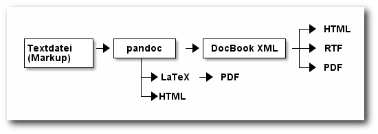
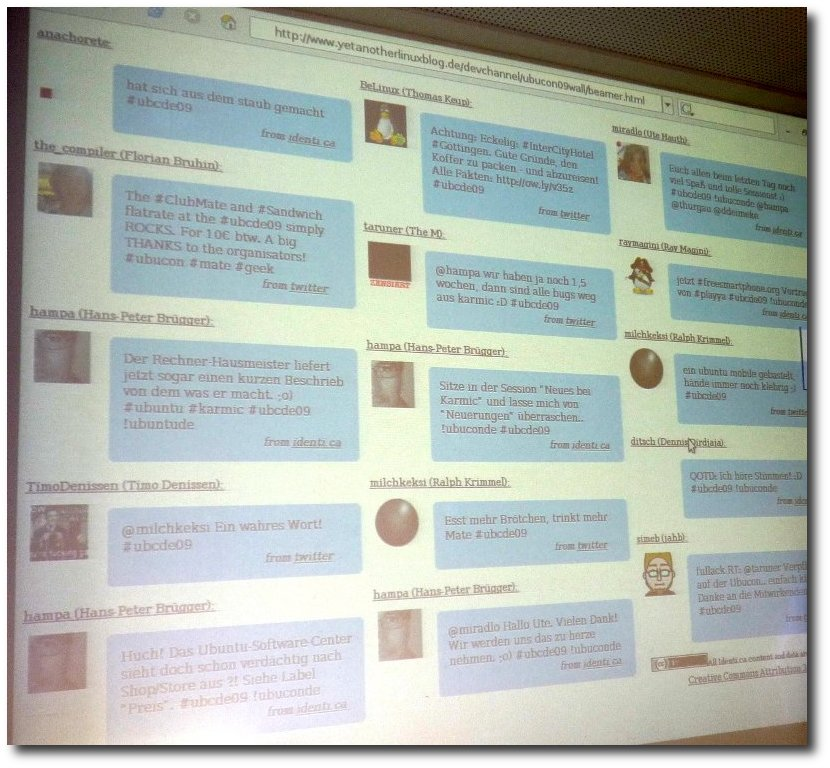
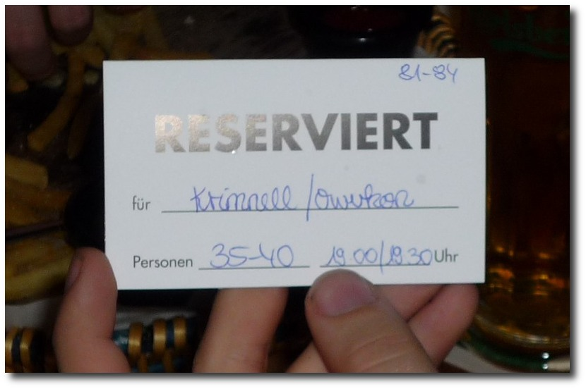
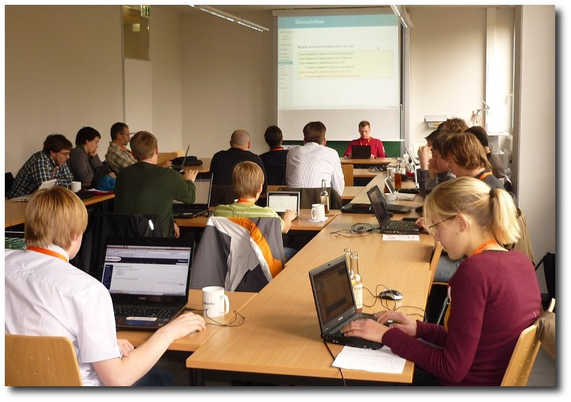
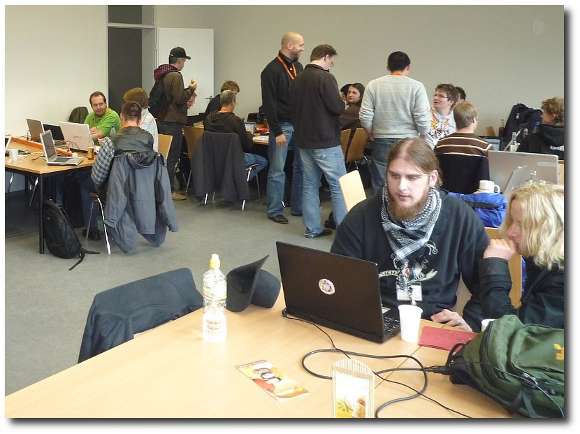
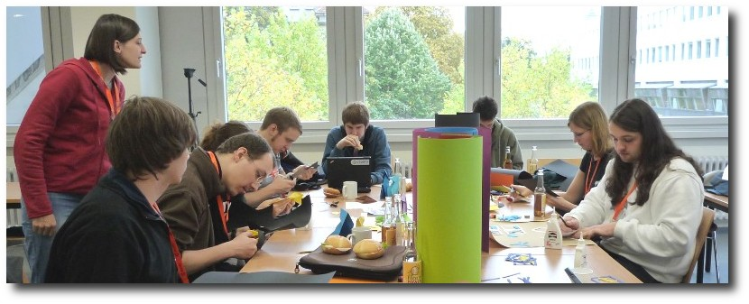
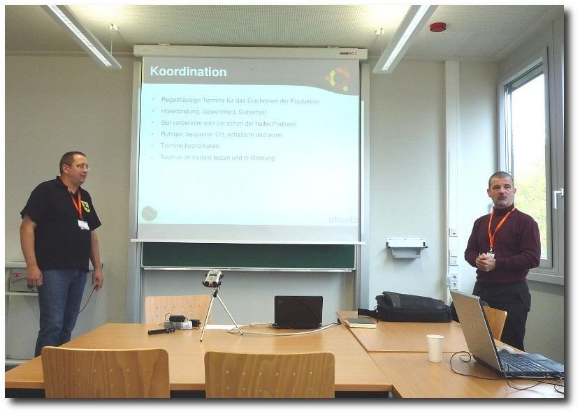
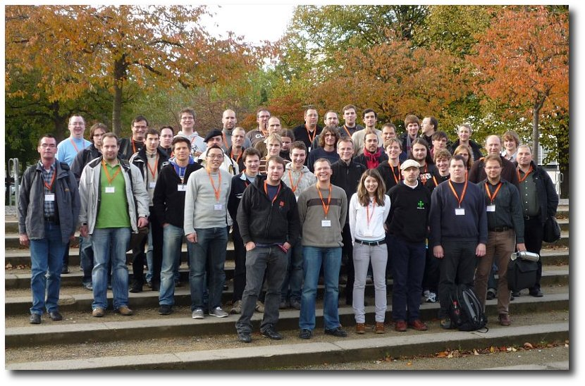

freiesMagazin November 2009 (ISSN 1867-7991)
Topthemen dieser Ausgabe
SSH-Port absichern
In Zeiten, in denen Heimanwender eine dauerhafte Verbindung ins Internet und unerfahrene Spieler einen Linux-Server unterhalten, werden zunehmend auch private Systeme ein lohnendes Ziel feindlicher Angriffe. Nicht nur sogenannte „Skript-Kiddies“, sondern auch professionelle Anbieter von Bot-Farmen grasen systematisch die Adressbereiche ab und starten in regelmäßigen Abständen Angriffe auf Heimserver. Der wohl am häufigsten angegriffene Port ist dabei der SSH-Port. Dieser Artikel zeigt ein paar Möglichkeiten, wie man seine Systeme ein wenig sicherer machen kann. (weiterlesen)
Hardwarekompatibilität unter Linux
Obwohl Linux bereits viele Geräte „out-of-the-box“ unterstützt, fürchten sich Linux-Nutzer bei jeder Neuanschaffung vor Problemen mit der neuen Hardware und Umsteiger von Windows zittern vor der Frage, ob ihr bestehendes System denn tatsächlich unter Linux laufen wird. Offensichtlich gibt es auch im Zeitalter von Plug & Play noch jede Menge Fallstricke und Stolpersteine, die dem Linux-Anwender den Spaß verderben können. (weiterlesen)
Rückblick: Ubuntu-Treffen auf der Ubucon 2009
Wie bereits letztes Jahr fand an der Universität Göttingen die Ubucon 2009 statt, Deutschlands größte Ubuntu-Veranstaltung. Vom 16. bis 18. Oktober konnten sowohl Ubuntu-Kenner als auch Ubuntu-Neulinge den informativen Vorträgen zuhören oder bei Workshops aktiv teilnehmen. (weiterlesen)
Zum Index
Inhalt
Linux allgemein
Shebang - All der Kram
Der Oktober im Kernelrückblick
Anleitungen
SSH-Port absichern
Nautilus-Scripts
Testen mit Perl
Software
ASCII-Art mal anders mit ditaa
Hardware
Hardwarekompatibilität unter Linux
Community
Ubuntu-Treffen auf der Ubucon 2009
Magazin
Editorial
Weitere Informationen zum Programmierwettbewerb
Leserbriefe
Veranstaltungen
Vorschau
Konventionen
Impressum
Zum Index
Editorial
Unfreie Software für allefreiesMagazin und unfreie Software
Hin und wieder scheinen sich einige Leser zu wundern, warum freiesMagazin über unfreie Software berichtet. Dabei wird vergessen, dass sich freiesMagazin sowohl mit Linux als auch mit Open Source beschäftigt, wobei der erste Begriff eben auch unfreie Programme (und hier vor allem Spiele) mit einschließt, da auch diese zur Welt von Linux gehören. Das heißt, auch in Zukunft werden wir über unfreie Software berichten, wenn diese unter Linux sinnvoll nutzbar ist. Aber wie sehen Sie das denn, werte Leser? Sind Sie auch an unfreier Software interessiert, wenn diese unter Linux gut funktioniert und es vor allem kein passendes freies Gegenstück gibt? Oder sind Sie eher der Meinung, dass in einem freien Magazin auch nur „echte“ Open-Source-Software vorgestellt werden darf? Wir freuen uns auf Ihre Kommentare.Neues aus „Sie vs. Du“
Letzen Monat stellten wir in freiesMagazin die Frage, ob unsere Art der Ansprache noch zeitgemäß und passend in der Open-Source-Landschaft ist. Es ging um die Frage, ob wir in freiesMagazin die Leser lieber duzen oder siezen sollen. Wir haben uns über Ihre zahlreichen Kommentare sehr gefreut und haben uns daraufhin für folgende Regelung entschieden: Innerhalb des Magazins bleibt alles beim Alten. Wir werden unsere Leser nach wie vor siezen. Bei der direkten Kommunikation per E-Mail mit Autoren oder Lesern werden wir aber die Ansprache wählen, die der Absender bevorzugt.Aktueller Stand des Wettbewerbs
Ende des letzten Monats startete der zweite freiesMagazin-Wettbewerb und das bisherige Interesse hat uns einfach überwältigt. Bisher wussten wir nicht einmal, dass unser Content-Management-System Drupal für Kommentare eine zweite Seite anlegt, wenn es zu viele werden. Dementsprechend haben uns die zahlreichen Fragen, Kommentare und Anmerkungen sehr gefreut. Jetzt fehlt eigentlich nur noch, dass alle, die sich für den Wettbewerb interessiert haben, auch daran teilnehmen. Es gibt bereits fünf KI-Einsendungen, alle für die Spielstufe „schwer“. Die anderen Kategorien, vor allem die Kategorie „3-D-GUI“, sind noch etwas unterrepräsentiert und wir würden uns freuen, wenn es auch dort Teilnehmer gibt. Schicken Sie Ihren Beitrag einfach anZum Index
Shebang - All der Kram
von Markus Schnalke Dieser Artikel ist nicht nur eine Einführung in den Shebang-Mechanismus unter Unix. Er soll neben Beispielen und Empfehlungen für die Nutzung auch Hintergrundinformationen und Verständnis der internen Abläufe vermitteln.Was ist Shebang?
So gut wie jeder, der schon mal ein Shell-Skript geschrieben hat, hat dabei auch eine Shebang-Zeile verwendet. Beispielsweise so:
#!/bin/sh # Dieses Skript gibt das # Datum aus date |
Name und Namensherkunft
Was genau den Namen „Shebang“ trägt, ist nicht so recht definiert. Die erste Zeile in Skripten wird so genannt, aber auch der ganze Mechanismus oder auch nur die zwei Zeichen #!. Auch die Herkunft des Namens scheint nicht ganz klar zu sein, zumindest kann man an verschiedenen Stellen Unterschiedliches lesen. Im amerikanischen Slang bedeutet „Shebang“ so etwas wie „Kram“ oder „Zeug“. Davon könnte das Wort übernommen worden sein. „Hash-Bang“ (die Namen der Zeichen „#“ und „!“ im Computerjargon) oder „Shell-Bang“ können aber ebenso zu „Shebang“ geführt haben [1]. Vermutlich ist diese Schwammigkeit daran schuld, dass die Shebang-Funktionalität zwar recht bekannt ist, ihr Name aber kaum.Funktionsweise aus Nutzersicht
Dem Anwender bringt Shebang den Vorteil, dass es ihn nicht kümmern muss, in welcher Programmiersprache ein Programm geschrieben wurde. Auch wenn das Programm in einer anderen Sprache reimplementiert wird, bekommt er davon nichts mit. Dank Shebang kann er Skripte genau so starten, wie kompilierte Programme, nämlich direkt mit ihrem Namen. Gäbe es kein Shebang, so müsste er je nach verwendeter Programmiersprache Unterschiedliches eingeben. Beispielsweise sh skript oder perl skript. Oder falls es ein kompiliertes Programm ist, eben nur skript. Für den Skriptentwickler ist Shebang ebenfalls eine Erleichterung, weil es nur einer Zeile am Skriptbeginn bedarf, um den Interpreter festzulegen. Danach muss er sich nicht mehr darum kümmern, es funktioniert einfach. Allerdings gilt das nur, solange die Shebang-Zeilen einfach sind. Will man etwas komplizierte Dinge tun, dann stößt man schnell an die Grenzen des Mechanismus. Glücklicherweise kommt das selten vor. Und wenn, dann kann der Programmierer ja auch wieder auf seinen herkömmlichen Kommandoaufruf zurückgreifen und Shebang einfach außen vor lassen. Shebang für den Shell-Skript-Schreiber ist vergleichbar mit Makefiles für einen C-Programmierer: Es ist meist komfortabler mit, aber manchmal will man doch lieber ohne.Die Betriebssystemsicht
Es ist immer gut, wenn man weiß, wie eine Funktion intern arbeitet. Wie also - oder besser wo - die Shebang-Zeile interpretiert wird. Diese Aufgabe übernimmt der Kernel. In ihm muss die Unterstützung für Shebang eingebaut sein. Alle aktuellen Unix-Kernel können mit Shebang-Skripten umgehen. Das liegt vor allem daran, dass es Shebang schon ziemlich lange gibt. Eingeführt wurde es von Dennis Ritchie in den 80er-Jahren für Version 8 Unix [2]. Da Skripte mit Shebang so aufgerufen werden, als wären es kompilierte Programme, werden sie von der Shell auch ebenso behandelt. Das heißt, sie kümmert sich gar nicht darum, ob es sich um ein Skript mit Shebang oder um ein kompiliertes Programm oder um irgendetwas anderes handelt, sie übergibt es nur dem Kernel, damit dieser es ausführt. Der Kernel muss nun entscheiden, wie er den Aufruf behandelt. Dazu liest er die ersten paar Bytes der Datei ein; dort befinden sich sogenannte „Magic Numbers“ [3] die den Dateiinhalt charakterisieren. Findet er dort „\177ELF“, dann ist es ein für GNU/Linux kompiliertes Programm, das er direkt ausführen kann. #! zeigt dagegen ein Shebang-Skript an. Dateien, die er nicht erkennt, lehnt er mit einem Fehler ab. Bei Shebang-Skripten wird nun der eigentliche Programmaufruf durch den Inhalt der Shebang-Zeile ersetzt, wobei noch der Dateiname angehängt wird. Für diesen neuen Befehl entscheidet der Kernel erneut, ob und wie er ihn verarbeitet. Für das anfangs gezeigte Beispielskript läuft es folgendermaßen ab:- Nach dem Aufruf von ./beispielskript.sh fordert die Shell die Ausführung dieses Befehls beim Kernel an.
- Der Kernel schaut sich die ersten Bytes der Datei an und findet dort #!. Somit generiert er eine neue Ausführungsanforderung an sich selbst. Er nimmt das erste Wort (nach #!) als Befehl und den Rest der Zeile als erstes Argument. Den Dateinamen und die Kommandozeilenargumente hängt er hinten an.
/bin/sh ./beispielskript.sh |
Stolpersteine
Shebang ist nicht sehr kompliziert, doch es gibt Dinge zu beachten, jedenfalls wenn das Skript portabel sein soll. Den Interpreter-Pfad zum Beispiel. Dieser sollte absolut sein. Manche Kernel können zwar mit relativen Pfaden umgehen, aber nicht alle. Absolute Pfade sind kein Problem solange sie /bin/sh lauten, denn eine Bourne-kompatible Shell ist auf allen Unix-Systemen an diesem Ort zu finden. Schreibt man aber Python- oder Perl-Skripte, so hat man das Problem, dass diese Interpreter nicht auf allen Systemen am gleichen Ort installiert sind. Oft wird /usr/bin/python zwar zutreffen, aber manchmal ist es halt auch /usr/local/bin/python oder etwas ganz anderes. Um dieses Problem zu lösen, kann man sich des Programms env bedienen. Unter der Annahme, dass env auf sehr vielen Systemen am gleichen Ort (/usr/bin/env) liegt, überlässt man es ihm, den eigentlichen Interpreter aufzurufen. Zum Beispiel wie in folgendem Skript:
#!/usr/bin/env python print "foo" |
#!/usr/bin/awk -f
BEGIN { print "foo" }
|
#!/usr/bin/awk -F: -f
{ print $1 }
|
Eigene Skripte
Nach dem bisherigen Text und seinen Beispielen sollte der Leser nun in der Lage sein, sein eigenes Shell-Skript zu erstellen. Hier soll dieser Vorgang jedoch noch einmal exemplarisch gezeigt werden. Man erstellt im Editor eine Textdatei foo.sh mit folgendem Inhalt:
#!/bin/sh whoami echo "http://freiesmagazin.de" date |
$ chmod +x foo.sh |
$ ./foo.sh |
meillo http://freiesmagazin.de Di 15. Sep 10:49:18 CEST 2009 |
while (( ++i < 5 )) ; do ... done |
Aufgaben
Zum Schluss noch zwei Verständnisfragen, um das vermittelte Wissen zu festigen und um zum eigenen Nachforschen anzuregen. 1. Was ist der Unterschied zwischen den folgenden zwei Skripten?
#!/bin/sh echo $0 $@ |
#!/bin/echo |
$ cd /tmp $ echo '#!/tmp/b' >a $ echo '#!/tmp/c' >b $ cp printargs c $ chmod +x a b |
#include <stdio.h>
int
main (int argc, char* argv[])
{
int i;
for (i = 0; i < argc; i++) {
printf(%d: %s\n", i, argv[i]);
}
return 0;
}
|
$ gcc -o printargs printargs.gcc |
- http://de.wikipedia.org/wiki/Shebang
- http://www.in-ulm.de/~mascheck/various/shebang/sys1.c.html
- http://de.wikipedia.org/wiki/Magische_Zahl_(Informatik)
- http://git.kernel.org/?p=linux/kernel/git/stable/linux-2.6.27.y.git;a=blob;f=fs/binfmt_script.c
- http://git.kernel.org/?p=linux/kernel/git/stable/linux-2.6.27.y.git;a=commitdiff;h=09932109
- http://cvsweb.netbsd.org/bsdweb.cgi/src/sys/kern/exec_script.c?rev=1.63
- http://wiki.ubuntu.com/DashAsBinSh
- http://www.in-ulm.de/~mascheck/various/shebang.html
| Autoreninformation |
| Markus Schnalke liebt Unix und dessen Skripting-Möglichkeiten. So auch den Shebang-Mechanismus, der die Ausführung von Skripten deutlich erleichtert. |
Zum Index
Der Oktober im Kernel-Rückblick
von Mathias Menzer Basis aller Distributionen ist der Linux-Kernel, der fortwährend weiterentwickelt wird. Welche Geräte in einem halben Jahr unterstützt werden und welche Funktionen neu hinzukommen, erfährt man, wenn man den aktuellen Entwickler-Kernel im Auge behält. Der Oktober war ein relativ ruhiger Monat für die Weiterentwicklung des Kernels. Dies mag unter anderem daran gelegen haben, dass vom 18. bis 20. des Monats die Größen der Kernel-Entwicklung wieder zum Linux Kernel Developers Summit trafen, der jährlichen Zusammenkunft, auf der über die weitere Arbeit am Linux-Kernel beraten wird. Doch begonnen hatte der Oktober mit einem kleinen Täuschungsmanöver. Aufmerksame Augen werden bemerkt haben, dass auf den Kernel 2.6.32-rc1 direkt die Version -rc3 [1] folgte. Der Grund hierfür lag in einem Tippfehler seitens Torvalds beim Erstellen der ersten Entwicklerversion im Makefile, wo er als Extraversion „-rc2“ angegeben hatte. Obwohl der Commit, die Änderungsanweisung im Kernel-Versionsverwaltungssystem, die Version selbst korrekt darstellt, fürchtete Torvalds ein Durcheinander, wenn sich Entwickler beim Diskutieren auf der Kernel-Mailingliste mal auf die Bezeichnung des Commits, mal auf die im Makefile hinterlegte beziehen, sollte tatsächlich noch eine offizielle -rc2 Version veröffentlicht werden. Dieses Dilemma wurde durch den direkten Sprung zur dritten Entwicklerversion vermieden und der Kernel 2.6.32-rc1/-rc2 hat nun mit zwei gültigen Bezeichnungen einen Sonderstatus. Die Version -rc4 [2] brachte zwei neue Treiber im SCSI-Umfeld mit sich, dafür mussten cowloop und agnx weichen. Der erstgenannte Treiber ermöglicht es, auf Block-orientierte Speichergeräte oder Dateien zu schreiben, ohne sie tatsächlich zu ändern, indem die Schreibvorgänge in ein „cowfile“ umgeleitet werden. Der Treiber muss überarbeitet werden und wurde auf Bitten der Entwickler entfernt, während agnx, der erst in der Version 2.6.29 aufgenommene Treiber für Airgo AGNX00-Wlan-Chipsätze, defekt ist und nicht fortentwickelt wird. Die Version -rc5 [3] folgte recht bald auf -rc4 und brachte daher nicht sehr viele Änderungen mit. Eine davon ist „vmxnet3“, ein emulierter Netzwerkadapter für Gäste von VMwares Virtualisierungslösung, die zusammen mit stmmac, einem Treiber für 10/100/1000MBit-Netzwerkkarten, von STMicroelectronics, den Löwenanteil an der fünften Entwicklerversion ausmachten.TPM und Linux
Eher mit Widerwillen schauen Linux-Nutzer auf das Trusted Computing Module (TPM) [4], steht es doch zu sehr mit der Einschränkung der Rechte des Anwenders am eigenen Rechner in Verbindung. Doch nun soll der in einigen Dell-Servern bereits verbaute Chip einem sinnvollen Zweck dienen. So soll der im TPM-Chip eingebaute Zufallszahlengenerator künftig den Entropy Pool füllen [5], der zum Beispiel Zufallswerte für die Erstellung von geheimen Schlüsseln liefert. Bislang werden in diesen Pool Werte gespeichert, die sich aus Tastatureingaben und Mausbewegungen errechnen und damit als recht unvorhersehbar gelten. Bei Servern, die meist über keine direkt angeschlossenen Eingabegeräte verfügen, entfällt diese Möglichkeit. Links- http://lkml.org/lkml/2009/10/4/170
- http://lkml.org/lkml/2009/10/11/150
- http://lkml.org/lkml/2009/10/15/408
- http://de.wikipedia.org/wiki/Trusted_Platform_Module
- http://www.linux-magazin.de/NEWS/Dells-Linux-Entwickler-implementieren-TPM-Funktion
| Autoreninformation |
| Mathias Menzer wirft gerne einen Blick auf die Kernel-Entwicklung, um mehr über die Funktion von Linux zu erfahren und seine Mitmenschen mit seltsamen Begriffen und unverständlichen Abkürzungen verwirren zu können. |
Zum Index
SSH-Port absichern
von Mirko Lindner In Zeiten, in denen Heimanwender eine dauerhafte Verbindung ins Internet und unerfahrene Spieler einen Linux-Server unterhalten, werden zunehmend auch private Systeme ein lohnendes Ziel feindlicher Angriffe. Nicht nur sogenannte „Skript-Kiddies“, sondern auch professionelle Anbieter von Bot-Farmen grasen systematisch die Adressbereiche ab und starten in regelmäßigen Abständen Angriffe auf Heimserver. Der wohl am häufigsten angegriffene Port ist dabei der SSH-Port. Dieser Artikel zeigt ein paar Möglichkeiten, wie man seine Systeme ein wenig sicherer machen kann. Redaktioneller Hinweis: Der Artikel „SSH-Port absichern“ erschien erstmals bei Pro-Linux [1] und wird mit freundlicher Genehmigung des Autors unter der GNU Free Documentation License veröffentlicht [2].Allgemeine Problematik
Das Netz scheint von bösen Buben und Crackern voll zu sein, denn auch nicht publik gemachte Server geraten zunehmend in die Schusslinie von zwielichtigen Gestalten. Die Vorgehensweise ist dabei fast immer dieselbe: Skriptgesteuert wird nach lohnenden Zielen gesucht. Um den Aufwand relativ klein zu halten, denn Zeit ist bekanntlich Geld, werden dabei nur bestimmte Ports abgefragt. Eines dieser lohnenden Ziele ist dabei der SSH-Port (22), der regelmäßig Opfer von Brute-Force oder Wörterbuch-Attacken wird. Wer nun glaubt, dass sein Server außerhalb des Fokusses der Angreifer liege, weil seine IP-Adresse nicht öffentlich gemacht wurde, der irrt mitunter gewaltig. Gelegentliche Tests ergeben, dass auch neue Systeme in relativ kleinen Netzen bisweilen bis zu zweimal täglich Opfer von Angriffen werden. Die wohl bekanntesten Angriffe waren dabei Listen-Attacken, in denen beispielsweise versucht wird, das Passwort des Nutzers Root mittels vorgefertigter Listen zu erraten. Wer unkonventionelle Passwörter benutzt, fühlt sich wahrscheinlich sicherer, doch alleine schon der Angriff kann die ohnehin meistens limitierten Ressourcen des Heimservers massiv schmälern. Ein weiteres Risiko stellt im Allgemeinen auch der Anwender dar, der oftmals seine Telefonnummer aus einem Telefonbuch streichen lässt, bei der Vergabe der Passwörter mitunter aber den kreativen Tod stirbt und grundsätzlich als Passwort seinen Vornamen nimmt. Auch hier ist der Administrator in der Pflicht, den Anwender vor seinem eigenen Untergang zu bewahren.Der Angriff
Um effektiv gegen potentielle Angreifer vorgehen zu können, muss man sich zuallererst im Klaren sein, wie die meisten Angriffe strukturiert sind. Dazu reicht es, die Log-Dateien auszuwerten, um zu erkennen, dass die überwiegende Mehrzahl der Angriffe auf zwei Arten erfolgt. Zum einen wird versucht, mittels einer Liste das Passwort der ohnehin schon bekannten Benutzer zu erraten. Einer dieser Nutzer ist Root. Das Skript arbeitet dazu eine bereits vorgefertigte Liste ab und probiert schlicht alle Passwörter aus. Eine zweite Möglichkeit ist, dass das Skript eine Liste von häufig benutzten Anwendernamen abarbeitet und ebenfalls mittels einer Liste das Passwort zu erraten versucht. Sicherlich gibt es auch kompliziertere Methoden wie SSH Session Hijacking oder die Ausnutzung von Sicherheitsproblemen in ssh, wie Beispielsweise des SSH CRC-32 Compensation Attack Detector-Fehlers. Die meisten Attacken benötigen allerdings einen direkten Zugriff auf den Server und oftmals eine Portion Glück, weshalb sie faktisch von den mittlerweile täglich stattfindenden Angriffen auf private Server so gut wie nie durchgeführt werden. Das Gros der Angriffe stellen immer noch Listenangriffe dar.Der ssh-Daemon
Bereits von Hause aus kann der ssh-Daemon so abgesichert werden, dass ein Einbruch weitgehend ausgeschlossen wird. Hier werden ein paar Möglichkeiten vorgestellt, wie man den Dienst gegen potentielle Angreifer schützen kann.Keine Macht den Doofen
In den meisten Fällen ist es nicht notwendig, dass alle Anwender auf einen Server auch mittels ssh zugreifen können. Am wenigsten besteht dabei die Notwendigkeit, dass Root sich direkt einloggen kann, bietet doch Linux mittels sudo und su die Möglichkeit, im laufenden Betrieb den Anwender zu wechseln. Bedenkt man ebenfalls, dass die Hälfte der Listenangriffe gegen Root durchgeführt werden, grenzt es fast schon an Fahrlässigkeit, Root auch einen Zugriff auf den Server mittels ssh zu erlauben. Um Root den Zugriff auf den Server zu verwehren, bietet der Daemon mehrere Möglichkeiten. Die effektivste ist dabei, den Parameter PermitRootLogin in der Datei /etc/ssh/sshd_config auf no zu setzen. Damit wird grundsätzlich dem Anwender Root ein Zugriff mittels ssh verwehrt. Will man sich allerdings von einem lokalen Netzwerk weiter als Root auf den Server einloggen, bedarf es einer anderen Strategie. Eine feinere Einteilung der Rechte ermöglicht die Option AllowUsers mit dem folgenden Eintrag:
LoginGraceTime 600 MaxAuthTries 3 AllowUsers root@*.mydomain user |
Ein Schlüssel zum Glück
Eine weitere Möglichkeit, das System gegen Angriffe von außen zu schützen, stellt die Umstellung des Authentifizierungsverfahrens dar. SSH bietet grundsätzlich die Möglichkeit, sich mittels verschiedener Verfahren zu authentifizieren. Das gängigste dabei ist die Passwort-Authentifizierung, die mit dem Parameter PasswordAuthentication gesteuert wird. Schaltet man diese und weitere auf dem Passwort beruhenden Optionen aus, so kann sich kein Anwender mehr auf den Server mit dem regulären Passwort einloggen. Doch was tun, um trotzdem Zugriff auf den Server zu haben? Die Antwort darauf liefert das schlüsselbasierte Verfahren. In diesem Fall wird auf dem Server ein Schlüsselpaar generiert und dem ssh-Daemon bekannt gegeben. Während der Serverschlüssel, wie der Name bereits suggeriert, auf dem Server verbleibt, erhält jeder berechtigte Anwender einen öffentlichen Schlüssel, der einen Zugriff auf den Server erlaubt. Ein Angriff mittels Wörterbuchlisten ist damit ausgeschlossen. Eine Anleitung, wie man seinen Server mit dieser Methode absichern kann, liefert der Artikel „Den Server absichern“ [3] auf Pro-Linux von Mario Schröder.Portsalat
Eine ebenso simple wie effektive Möglichkeit, Server gegen automatisierte Angriffe zu schützen, stellt die Umstellung der Ports dar. Das Verfahren hilft zwar nur bedingt gegen dedizierte Angriffe auf einen Server, denn ein Angreifer wird mit hoher Wahrscheinlichkeit auch einen Portscan durchführen, für simple Skripte von Botfarmen-Betreibern ist es allerdings perfekt. Dazu ändert man den Standardport von 22 auf einen anderen. Dazu muss man lediglich den Parameter Port in der Datei /etc/ssh/sshd_config verändern. Für diesen Artikel wurde der Parameter auf den Port 12345 gesetzt. Versucht man sich nun regulär auf seinem Server einzulogen, wird es nicht mehr gelingen und man erhält die Meldung, dass die Verbindung abgewiesen wurde. Erst ein Login auf dem Port 12345 bringt einen zum Ziel:
$ ssh myserver -p 12345 -l user |
Sperren statt blocken
Die obigen Möglichkeiten stellen nur einen Teil der Funktionen dar, die ssh bietet, um Angreifer abzuwehren. Kombiniert mit den Systemtools wie beispielsweise der pam_abl [4], die in der Lage ist, Blacklists von falschen Logins zu erstellen, ergeben sich mächtige Kaskaden von Programmen, die jeden Angreifer in Schach halten. Eine Steigerung stellt allerdings nicht nur das Blocken, sondern auch das Aussperren von Angreifern dar. Es ist grundsätzlich davon auszugehen, dass jemand, der beispielsweise zehnmal ein falsches Passwort über SSH eingegeben hat, nichts Gutes im Schilde führt. Was liegt also näher, ihm nicht nur ein Login zu verwehren, sondern ihn gleich komplett für eine bestimmte Zeit zu sperren? Auch hier bietet Linux eine Reihe von Werkzeugen, die einem die Arbeit erleichtern werden. In diesem Artikel werden zwei der bekanntesten Vertreter vorgestellt, die das Aussperren von Anwendern direkt in einer Firewall übernehmen. Hinweis: Man sollte grundsätzlich alle Änderungen und Tests auf einem lokalen Server durchführen. Nichts ist schlimmer, als sich von einem Root-Server durch eine falsche Konfiguration auszusperren!fail2ban
fail2ban [5] kann IP-Adressen aufgrund einer bestimmten Anzahl fehlgeschlagener Loginversuche für eine einstellbare Zeit blockieren. Technisch gesehen überprüft die Applikation zuvor festgelegte Log-Dateien nach missglückten Loginversuchen und erstellt beim Erreichen einer zuvor festgelegten Anzahl von Fehlern eine Regel in der Firewall. Dabei kommt die Anwendung nicht nur mit SSH, sondern auch mit einer Vielzahl von weiteren Applikationen klar. Die Filterregelfunktionalität ermöglicht darüber hinaus die Erstellung von neuen, an die Erfordernisse des Anwenders angepassten Regeln. Für SSH bietet fail2ban bereits schon vorkonfigurierte Regeln an, die lediglich eine kleinere Anpassung erfordern. Die eigentliche Konfiguration der Filterregel wird in der Datei /etc/fail2ban/jail.conf umgesetzt. Der für das Absichern von SSH interessante Abschnitt dieser Datei findet sich unter dem Eintrag ssh-iptables.
[ssh-iptables] enabled = true filter = sshd action = iptables[name=SSH, port=ssh, protocol=tcp] sendmail-whois[name=SSH, dest=user@myhostname, sender=fail2ban@myhostname] logpath = /var/log/secure maxretry = 3 |
# fail2ban-client status ssh-iptables Status for the jail: ssh-iptables |- filter | |- File list: /var/log/secure | |- Currently failed: 0 | `- Total failed: 74 2 `- action |- Currently banned: 3 | `- IP list: 94.75.x.x 94.75.x.x 217.160.x.x `- Total banned: 95 |
# iptables -L fail2ban-SSH |
knockd
Eine andere Strategie der Eindringlingsabwehr verfolgt knockd [8] mit Portknocking. Portknocking stellt ein Verfahren dar, um einzelne Serverdienste oder einen kompletten Server abzusichern. Wie bereits der Name suggeriert, muss der Anwender zuvor an den Server „anklopfen“, damit er Zugang zu einem vorher festgelegten Serverdienst erhält. Die Kommunikation auf dem gewünschten Port wird dabei zunächst von einer Firewall vollständig geblockt. Sendet der Anwender ein Klopfzeichen in Form von mehreren SYN-Paketen mit einem zuvor vereinbartem Inhalt, „öffnet“ knockd den entsprechenden Port für den Anwender. Der Vorteil des Verfahrens ist, dass ein Angreifer ohne die Kenntnis der zuvor vereinbarten Abfolge der Zeichen von außen auch mit einem Port-Scanner nicht erkennen kann, ob ein bestimmter Serverdienst eingeschaltet wurde. Die Konfigurationsdatei /etc/knockd.conf beherbergt alle relevanten Informationen, die für einen reibungslosen Betrieb von knockd notwendig sind.
[openSSH] sequence = 1234,2345,3456 seq_timeout = 5 command = /sbin/iptables -A INPUT -s %IP% -p tcp --dport 22 -j ACCEPT tcpflags = syn [closeSSH] sequence = 1234,2345,3456 seq_timeout = 5 command = /sbin/iptables -D INPUT -s %IP% -p tcp --dport 22 -j DENY tcpflags = syn |
Abschließendes
Dieser Artikel konnte nur einen kleinen Teil der Möglichkeiten aufzeigen, die einem zur Absicherung eines Systems zur Verfügung stehen. Man sollte immer im Hinterkopf behalten, dass ein Server ein lohnendes Ziel für Angreifer darstellt. Es lohnt sich deshalb, die gängigsten Strategien anzuschauen. Allein schon die Änderung des Standardports senkt die Zahl der erfolgten Angriffe massiv. Schaltet man dann nur noch dienotwendigen Benutzer für einen SSH-Zugriff frei, senkt man das Einbruchsrisiko weiter. Trotz allem sollte man allerdings beachten, dass kein System oder Server hundertprozentig sicher ist. Links- http://www.pro-linux.de/berichte/ssh-absichern.html
- http://www.gnu.org/copyleft/fdl.html
- http://www.pro-linux.de/work/rootserver/teil2.html
- http://pam-abl.deksai.com/
- http://www.fail2ban.org/wiki/index.php/Main_Page
- http://denyhosts.sourceforge.net/
- http://www.aczoom.com/cms/blockhosts
- http://www.zeroflux.org/projects/knock
| Autoreninformation |
| Mirko Lindner ist seit 1998 aktiv in die Entwicklung des Kernels eingebunden und verantwortlich für diverse Treiber und Subsysteme. Daneben ist er einer der Betreiber von Pro-Linux.de. |
Zum Index
Nautilus-Scripts
von Dominik Mäder Nautilus bringt von Haus aus nützliche Funktionen mit. So ist das Versenden von E-Mails direkt per Rechtsklick auf die entsprechenden Dateien möglich. Auch das Entpacken und Archivieren von Daten funktioniert komfortabel über das Kontextmenü. Aber oft wünscht man sich die eine oder andere spezielle Funktion, die Nautilus nicht beherrscht. Der eine konvertiert des Öfteren Audiodateien von einem ins andere Format, der andere editiert täglich die Rechte von Dateien. Und jedes Mal muss kompliziert das entsprechende Programm aufgerufen werden, um dort dann die entsprechenden Dateien auszuwählen. Aufgaben dieser Art lassen sich sehr leicht über über ein Nautilus-Skript [1] aus dem Kontextmenü starten.Skripte verwenden
Auch für Leute, die noch nicht mit dem Schreiben von Skripten vertraut sind, ist es lohnend sich mit dem Thema zu befassen. Denn für viele Anwendungen hat schon jemand ein Skript geschrieben und es für alle zugänglich gemacht. Skripte verschiedenster Art findet man bei g-scripts [2]. Um ein Skript zu benutzen, muss es nur im Homeverzeichnis in den versteckten Ordner .gnome2/nautilus-scripts/ geschoben werden. Es ist darauf zu achten, dass das Skript eine ausführbare Datei ist, da es sonst von Nautilus nicht gestartet werden kann. Dies macht man entweder direkt in Nautilus nach Rechtsklick auf die entsprechende Datei über das Kontextmenü „Eigenschaften » Zugriffsrechte » Datei als Programm ausführen“ oder über das Terminal mittels chmod u+x skriptdatei.Eigene Skripte
Die Erstellung eines eigenen Skripts fängt mit einer leeren Datei innerhalb eines beliebigen Texteditors an. Der Dateiname sollte möglichst aussagekräftig gewählt werden, da das Skript mit seinem Namen im Kontextmenü von Nautilus aufgelistet wird. Die meisten verfügbaren Skripte sind eine Aneinanderreihung von Bash-Befehlen. Nautilus kann aber auch mit mit anderen Skriptsprachen umgehen, vorausgesetzt die entsprechenden Interpreter sind auf dem System installiert. Im Folgenden werden zwei kleine Python-Skripte vorgestellt, da sich diese sich sehr einfach und übersichtlich gestalten. Die Sprache Python wird von Distributionen wie Ubuntu schon von Grund auf unterstützt und es müssen keine zusätzlichen Pakete installiert werden.PDFs zusammenfügen
Ein weit verbreitetes Programm, um PDFs zusammenzufügen, ist Pdftk (siehe „Kurztipp: Bastelstunde mit Pdftk“, freiesMagazin 03/2009 [3]). Es lässt sich ideal für ein Nautilus-Skript verwenden. Damit das Skript funktioniert, muss Pdftk beispielsweise über das gleichnamige Paket aus den Paketquellen installiert sein.
#!/usr/bin/python
# -*- coding: utf-8 -*-
from os import execvp
from sys import argv
parameter = argv + ['cat', 'output', 'zusammengefasst.pdf']
execvp('pdftk', parameter)
|
Audiodateien normalisieren
Audiodateien, die man aus verschiedenen Quellen erhält, haben oft eine unterschiedliche Lautstärke. Will man in seiner Musiksammlung ausschließlich Musikstücke des gleichen Lautstärkepegels haben, so muss man sie normalisieren [4]. Deshalb soll nun ein Skript zum Normalisieren von Audiodateien gezeigt werden. Das eigentliche Normalisieren erfolgt über den Aufruf der Programme mp3gain [5] und vorbisgain, die im Betriebssystem (wieder über gleichnamige Pakete) installiert sein müssen. Das Skript beginnt wie im ersten Beispiel mit den Angaben zur Skriptsprache, des Zeichensatzes und den eingebundenen Modulen. Im Gegensatz zum ersten Skript müssen hier aber die Programme mit jedem Musikstück separat aufgerufen werden. Damit die Dateien nacheinander und nicht parallel abgearbeitet werden, darf ein neuer Normalisierungsprozess erst starten, wenn der vorherige beendet ist. Hierfür werden die Befehle Popen und waitpid benötigt. Besitzt man einen Prozessor mit zwei Kernen oder mehr, so könnte man sich eine Routine überlegen, die zwei zeitgleiche Prozesse erlaubt. Die Liste an Dateien wäre dann doppelt so schnell abgearbeitet.
#!/usr/bin/python # -*- coding: utf-8 -*- from subprocess import Popen from os import waitpid from sys import argv def gain(format, song): format.append(song) process = Popen(format) finish = waitpid(process.pid, 0) audio_dateien = argv[1:] while len(audio_dateien) != 0: song = audio_dateien.pop() if song[-4:] == '.mp3': format = ['mp3gain', '-r'] gain(format, song) elif song[-4:] == '.ogg': format = ['vorbisgain', '-a'] gain(format, song) Popen(['zenity'] + ['--info'] + ['--text'] + ['Skript abgearbeitet!']) |
- http://live.gnome.org/Nautilus/Extending
- http://g-scripts.sourceforge.net/
- http://www.freiesmagazin.de/freiesMagazin-2009-03
- http://de.wikipedia.org/wiki/Normalisierung_(Audio)
- http://wiki.ubuntuusers.de/MP3Gain
- http://www.freiesmagazin.de/freiesMagazin-2007-03
- http://wiki.ubuntuusers.de/Nautilus/Skripte
| Autoreninformation |
| Dominik Mäder arbeitet gerne mit freier Software. Skripte und weitere kleine Helferlein machen ihm dabei das Leben einfacher. |
Zum Index
Testen mit Perl
von Marcel Jakobs Bei der Erstellung größerer Programme ist das Testen ein praktisches und wichtiges Werkzeug zur Qualitätssicherung. Im Folgenden wird diese Technik am Beispiel der Skriptsprache Perl behandelt. Es gibt jedoch für fast alle Programmiersprachen entsprechende Bibliotheken oder Module. Somit könnte dieser Artikel - zumindest teilweise - auch für Programmierer anderer Sprachen interessant sein. Beim Testen von Software werden Testfälle generiert, die überprüfen sollen, ob eine Funktion oder Klasse (d. h. alle Methoden der Klasse) richtig funktionieren. Testen spart somit das häufige „Ausprobieren“ von Hand und berücksichtigt zusätzlich noch alle Sonderfälle. Obwohl das Testen so wichtig ist, wird es immer wieder unterschätzt und vernachlässigt. Dabei kann es viel Zeit (und somit im kommerziellen Umfeld auch Kosten) sparen und Fehlern vorbeugen. Wer probiert schon von Hand jedes Mal nach der Änderung einer Funktion alle möglichen Fälle durch? Meist wird anhand von ein oder zwei Versuchen „überprüft“, ob die Funktion bzw. das Programm (noch) das gewünschte Resultat erbringt. Damit werden jedoch die meisten Fehler gerade bei Grenzfällen oder Ausnahmen nicht erkannt. Es werden grob zwei Arten von Tests unterschieden: das Blackboxtesting und das Whiteboxtesting.Blackboxtesting
Das Blackboxtesting (Schwarzer Kasten: Man kann nicht hinein sehen und weiß nur, was man eingeben kann und was heraus kommen soll) fängt schon vor dem eigentlichen Programmieren an. Zuerst werden Spezifikationen für die zu schreibenden Funktionen erstellt, die genau festlegen, was die Funktion berechnen und zurückgeben soll. Anhand dieser Spezifikation werden nun Testfälle generiert, die testen, ob alle Ausnahmen behandelt wurden, die Grenzfälle richtig implementiert wurden und die Funktion das richtige Ergebnis liefert. Diese Testfälle werden jedes mal ausgeführt, wenn man etwas an der Funktion bzw. Klasse geändert hat. So kann man sehr schnell überprüfen, ob man etwas vergessen hat und alles richtig funktioniert. Man kann auch in die Richtlinien zur Versionskontrolle aufnehmen, dass nur Code hochgeladen werden darf, der alle Tests bestanden hat. Dadurch befindet sich nur funktionierender Code im Repository. Wird (trotz Testfällen) ein Bug entdeckt, so wird sofort ein neuer Testfall geschrieben, bei dem die Funktion mit Bug durchfällt und den die verbesserte Version besteht. Dadurch wird vermieden, dass man bei einer Änderung der Funktion den selben Fehler noch einmal begehen kann. Neben der Zeitersparnis und dem qualitativ besseren Code hat das Blackboxtesting einen weiteren Vorteil: Man wird durch das vorherige Spezifizieren dazu gezwungen, mehr über die zu schreibenden Funktionen nachzudenken. Dadurch werden die Funktionen normalerweise allgemeiner, kleiner und somit wiederverwend- und wartbar.Whiteboxtesting
Die Testfälle des Whiteboxtesting (auch Glasboxtesting genannt; durchsichtiger Kasten: Man kann hinein schauen und die Testfälle nach dem Inhalt erstellen) werden nach der Implementierung erstellt und orientieren sich am Kontrollfluss. Das bedeutet man schreibt für jede Bedingung einen Testfall, der die Bedingung erfüllt und einen, der die Bedingung nicht erfüllt. Dadurch wird jeder Zweig des Programms einmal durchlaufen. So kann man feststellen, ob die Funktion in jedem Fall richtig handelt. Damit werden z. B. Syntax- oder Tippfehler aufgedeckt, die die Semantik (also das Verhalten des Programms) ändern aber keinen Programmabbruch verursachen (z. B. wenn ein „<“ mit einem „>“ verwechselt wurde). Da es of sehr schwer oder umständlich ist, geeignete Blackboxtestfälle zu generieren, kann man wenigstens einen Whiteboxtest machen.|
CPAN (Comprehensive Perl Archive Network) [1] ist
eine Paketverwaltung für Perl-Module. Die Suche und Installation von
Modulen kann dabei über ein kleines (englischsprachiges) Shell-Programm
geschehen, welches man über das Kommando cpan aufruft.
|
Testen mit Perl
Für Perl gibt es einige CPAN-Module zum Testen (Test::Simple, Test::More, Test::Harness, Test::Pod, Test::Class etc.). Hier wird auf das Modul Test::More [2] eingegangen. Dieses Modul stellt Funktionen zur Verfügung, um das Ergebnis eines Tests mit einem vorher definierten Wert zu vergleichen. Dazu kann man noch einen Namen für jeden Test angeben, damit die Ausgabe aussagekräftiger wird. Für jeden Test wird bei der Ausführung des Testskripts eine Zeile ausgegeben. Zuerst ein „ok“ oder „not ok“, je nach dem ob das Programm den Test bestanden hat oder nicht. Danach kommt eine laufende Nummer des Tests und dahinter der Name des Tests. Wird CPAN das erste Mal gestartet, so müssen einige Konfigurationsparameter festgelegt werden. Oft wird man gefragt, ob dies automatisch geschehen soll. Dies ist meist der einfachste Weg. Ansonsten wird man danach gefragt, von welchem Spiegelserver die Dateien heruntergeladen und welche Verzeichnisse zum Installieren genutzt werden sollen. Dabei kann man die vorgeschlagenen Werte (in eckigen Klammern) in der Regel übernehmen. Ein CPAN-Modul installiert man, indem man in die CPAN-Konsole einloggt und das install-Kommando mit dem Namen des zu installierenden Moduls aufruft:
# cpan cpan[1]> install Paketname::Modulname |
cpan[1]> install Test::More |
Beispiel
Blackboxtest
Will man eine Funktion zur Berechnung der Fakultät namens faculty im Modul MathModule schreiben, so wird diese zuerst spezifiziert:- Eingabe: Ganze Zahl n zwischen 0 und 16
- Ausgabe: Die Fakultät von n: n! oder −1 im Fehlerfall.
#!/usr/bin/perl
use strict;
use warnings;
use Test::More tests => 8;
use MathModule;
my %testhash = (
# Teste ungueltigen negativen Wert
-2 => -1,
-1 => -1,
# Teste Grenzfall 0
0 => 1,
# Teste Grenzfall 1
1 => 1,
2 => 2,
3 => 6,
# Teste Grenzfall 16
16 => 20922789888000,
# Teste ungueltigen zu grossen Wert
17 => -1
);
foreach(sort keys %testhash){
is(MathModule::faculty($_), $testhash{$_}, "faculty of: ".$_);
}
|
#!/usr/bin/perl
use strict;
use warnings;
use Test::More tests => 1;
use MathModule;
sub testFaculty{
my %testhash = (
# Teste ungueltigen negativen Wert
-2 => -1,
-1 => -1,
# Teste Grenzfall 0
0 => 1,
# Teste Grenzfall 1
1 => 1,
2 => 2,
3 => 6,
# Teste Grenzfall 16
16 => 20922789888000,
# Teste ungueltigen zu grossen Wert
17 => -1
);
my $ok = 1;
foreach(sort keys %testhash){
$ok = 0 if(MathModule::faculty($_) != $testhash{$_});
}
return $ok;
}
is(testFaculty(),1,"faculty");
|
Implementierung
Nun kann die Funktion geschrieben werden:
# File: MathModule.pm
#
# Stellt mathematische Funktionen zur
# Verfuegung
use strict;
use warnings;
package MathModule;
use base qw(Exporter);
our @EXPORT = qw(faculty);
# berechnet die Fakultaet fuer eine
# gegebene Zahl zwischen 0 und 16
sub faculty {
my $n = shift;
return -1 if $n < 0 or $n > 16;
return 1 if $n == 0;
return $n*faculty($n-1);
}
|
Tiefes Testen
Praktisch ist auch die Möglichkeit des tiefen Tests, der zwei Datenstrukturen (zusammengesetzte Datentypen, wie z. B. Arrays, Listen oder Hashes) vergleicht, statt nur Skalare (also elementare Datentypen, wie z. B. int, char oder float in vielen Programmiersprachen). Dafür nimmt man sich das vorherige Beispiel und schreibt eine Funktion, die die Fakultäten von -2 bis 17 berechnet und in ein Array schreibt. Dann vergleicht man mit der Methode is_deeply das Array mit einem vorgegebenen, welches per Hand erstellt wurde:
#!/usr/bin/perl
use strict;
use warnings;
use Test::More tests => 1;
use MathModule;
sub facultyArray {
my $min = shift;
my $max = shift;
my @results = ();
for my $i($min..$max){
# Fuege die berechnete Fakultaet
# von $i an die Liste @result an
push(@results,MathModule::faculty($i));
}
return @results;
}
my @facultynumbers = (-1,-1,1,1,2,6,24,120,720,5040, 40320,362880,3628800,39916800, 479001600,6227020800,87178291200, 1307674368000,20922789888000,-1);
is_deeply([facultyArray(-2,17)],[@facultynumbers],"arraytest");
|
Whiteboxtest
Der Whiteboxtest für die obige Implementation der Fakultät würde z. B. so aussehen:
#!/usr/bin/perl
use strict;
use warnings;
use Test::More tests => 1;
use MathModule;
sub testFaculty{
my %testhash = (
17 => -1, # Teste Wert > 16
-1 => -1, # Teste Wert < 0
0 => 1, # Teste 0
1 => 1 # Teste != 0
);
my $ok = 1;
foreach(sort keys %testhash){
$ok = 0 if(MathModule::faculty($_) != $testhash{$_});
}
return $ok;
}
is(testFaculty(),1,"faculty");
|
Weitere Informationen
Test::More bietet noch weitere Funktionen. Mit den hier vorgestellten sollten aber schon eine Reihe von Tests möglich sein. Weitere Informationen gibt es auf der CPAN-Seite von Test::More [2]. Sehr schön sind auch die Folien von Renée Bäckers „Perl Test Workshop“ [3]. Interessant sind auch die Wikipedia-Artikel über Softwaretests [4] und Testmethoden [5] sowie Blackbox- [6] und Whiteboxtesting [7]. Meist wird man gerade im privaten Bereich wenig Lust haben, Testfälle zu schreiben. In diesem Fall sollte man zumindest für die Funktionen, die besonders wichtig, kompliziert oder fehleranfällig sind, entsprechende Testfälle schreiben. Links- http://www.cpan.org/
- http://search.cpan.org/~mschwern/Test-Simple-0.92/lib/Test/More.pm
- http://renee-baecker.de/talks/TestenMitPerl.pdf
- http://de.wikipedia.org/wiki/Softwaretest
- http://de.wikipedia.org/wiki/Testmethoden
- http://de.wikipedia.org/wiki/Black-Box-Test
- http://de.wikipedia.org/wiki/White-Box-Test
| Autoreninformation |
| Marcel Jakobs programmiert gerne in Perl. Das Testen gehört für ihn bei größeren Programmen dazu. |
Zum Index
ASCII-Art mal anders mit ditaa
von Volker Duetsch Grafisch aufbereitet, lassen sich Sachverhalte häufig deutlich einfacher vermitteln und vom Empfänger schneller verstehen. ditaa [1] verfolgt ein grundsätzlich unterschiedliches Bedienkonzept im Vergleich zu bekannten Zeichenprogrammen, wie zum Beispiel Dia. Dia [2] ermöglicht, ebenfalls wie ditaa, beispielsweise die Erstellung von Flussdiagrammen und Organigrammen. Diese werden in Dia wie gewohnt per Maus gezeichnet. ditaa aber auch graphviz [3] verfolgen einen anderen Ansatz. Während Graphviz für die Graphenerstellung die eigene Auszeichnungssprache DOT [4] [5] verwendet, erwartet ditaa einfache Textdateien als Quelle. Dabei sind die grafischen Elemente nicht in einer eigenen Sprache beschrieben, sondern mit den Symbolen -, + und - dargestellt. Pfeilverbindungen werden durch -, <, > erzeugt.Warum Textdateien?
Textdateien haben einige Vorteile.
+-> HTML +---------+ +--------+ +-----------+ | |Textdatei|->| pandoc | ->|DocBook XML|-+-> RTF |(Markup) | +---+----+ +-----------+ | +---------+ | +-> PDF +->LaTeX -> PDF | +->HTML |
Konsistente Arbeitsweise
Der Anwender, der seine Dokumente beispielsweise mit LaTeX erzeugt, muss nicht seine gewohnte Arbeitsumgebung verlassen, um mal eben ein Diagramm zu erstellen.Portables Dateiformat
Mit kleinen Abstrichen (auf das Thema Kodierung ISO-8859-* bzw. UTF-8 soll hier nicht eingegangen werden) können diese Dateien über Betriebssystemgrenzen hinweg ausgetauscht, be- und verarbeitet werden. Nicht zu vergessen, dass es auch Server gibt, die keine grafische Oberfläche haben - Textdateien lassen sich aber auch in der Konsole inkl. ASCII-Zeichnungen anzeigen.Versionierbares Dateiformat
Durch den Einsatz eines Versionsverwaltungssystems [6], zum Beispiel git oder Mercurial, können mehrere Anwender gleichzeitig auch an Grafiken arbeiten.Skriptbares Dateiformat
Dateiinhalte lassen sich durch Skripte (mittels bash, grep, sed, awk, Perl, Python, PHP, Ruby, GNU/make etc.) generieren und manipulieren, d. h. die Arbeit lässt sich je nach Einsatzzweck und Aufgabe teilweise oder vollständig automatisieren.HTML-Export
Ein großer Vorteil ist, dass Zeichnungen direkt in das HTML-Dokument [7] eingebettet werden können. Eine Unterstützung für weitere Umgebungen wie beispielsweise JAVADoc ist geplant. Ein simples Übergangsdiagramm.
Entwicklung und Download
ditaa steht für „DIagrams Through Ascii Art“, wurde von Stathis Sideris in der Sprache Java entwickelt und unterliegt der GPL. Leider wird auf der Website noch auf die Beta-Version 0.6b hingewiesen, davon sollte man sich aber nicht abschrecken lassen, denn zum Download wird die aktuelle Version 0.8 angeboten.
+------------+ +-------+ +--------+ | | | | | | | Textdatei +-->| ditaa |-->| Grafik | | | | | | | +------------+ +-------+ +--------+ |
Grundlage
Ausgangspunkt für die Grafikerstellung ist eine einfache Textdatei. Diese kann mit einem Editor, wie z. B. Vim, Emacs, Kate oder gedit, erstellt werden. Wer sich für den Einsatz von Vim entscheidet, dem sei das DraWIt!-Plugin [8] empfohlen. Mittels DrawIt!-Plugin ist es möglich, mit den Cursor-Tasten zu „malen“. Um in den Zeichenmodus zu gelangen, gibt man im Kommando-Modus des Vim \di ein. Unterhalb der Statuszeile erscheint dann die Meldung [Drawit]. Jetzt befindet man sich im Zeichenmodus und kann „Kästchen malen“. Um den Zeichenmodus wieder zu beenden, wechselt man mittels „Esc“ in den Kommandomodus und verlässt mit \ds den Zeichenmodus. Weitere Details zur Verwendung des Plugins erfährt man mittels :help drawit. Ein kleiner Hinweis für die Vim-Nutzer: Neben dem DrawIt!-Plugin gibt es auf der Website von Charles E Campbell, Jr. [9] noch zahlreiche weitere, sehr nützliche Plugins: z. B. Alingment (hilft bei der Ausrichtung von Texten anhand von Mustern, wie z. B. bei Kommentaren im Quellcode) und Visual Incrementing (nützlich beim Erzeugen von Zahlen- oder Datenreihen). Alle wesentlichen Informationen zur Gestaltung der Grafik und den Optionen von ditaa sind auf einer HTML-Seite [10] zusammengefasst. Obwohl die Anzahl der Kommandooptionen übersichtlich und die Gestaltungsmöglichkeiten einfach gehalten sind, lassen sich mit geringem Aufwand ansprechende Grafiken erstellen.Beispiele
ditaa wird als Java-Archiv [11] ausgeliefert. Um die Konvertierung zu starten, reicht es java -jar ditaa.jar einzugeben, gefolgt vom Dateinamen für die Quell- und Zieldatei. Die Quelldatei ist die ASCII-Datei ditaa-beispiel-1.txt, aus der mit Hilfe von ditaa die Zieldatei ditaa-beispiel-1.png generiert wird:
$ java -jar ditaa.jar ditaa-beispiel-2.txt ditaa-beispiel-2.png |
Von der Textdatei zur Grafik.
Für die Erstellung und Konvertierung der Beispieldateien wurden ungefähr fünf Minuten benötigt. Im ersten Beispiel wurde ohne zusätzliche Parameter auf die Verwendung von Formen und Farben verzichtet.
+------------+ +-------+ +--------+
|cF00 | |cFF0 | |c0F0 |
| Textdatei +-->| ditaa |-->| Grafik |
| {d}| | {io}| | {d}|
+------------+ +-------+ +--------+
|
$ java -jar ditaa.jar ditaa-beispiel-3.txt ditaa-beispiel-3.png |
Und nun mit etwas mehr Farbe und Form.
Fazit
Zum Abschluss noch ein praktisches Beispiel, das im Rahmen einer Schulung zum Thema EDI (Electronic Data Interchange) im SAP-Umfeld entstand. Die mit ditaa erzeugte Grafik endete schließlich in einem PDF-Dokument, das wiederum mit der LaTeX-Beamer-Klasse [13] erzeugt wurde. Die LaTeX-Beamer-Klasse ist eine Alternative zu Powerpoint und zu Impress von OpenOffice.org. ditaa verkörpert die Unix-Philosophie [14], ist portabel, lässt sich einfach bedienen, benötigt nur eine geringe Einarbeitungszeit und liefert ansprechende Ergebnisse. Jeder sollte es zumindest einmal angetestet haben.
+------------+ +--------+Kundensystem|<-----+ | +------------+ | | ^ | v | | +-------+ +---+---+ +---+---+ |VDA4905| |VDA4913| |VDA4906| +---+---+ +-------+ +---+---+ | ^ ^ | | | | | +-------+ | | | | +-----+-----+-+ +------->|Dienstleister| +----+--------+ | ^ v | +----+--+ |SAP R/3| |IDOC | +-++--+-+ |^ ^ +---------------+| | | | +------------+ v | | +-----------+ +---+--------+ +---+---+ |Belegart LZ| |Lieferschein| |Faktura| |VDA4905 +->|VDA4913 +->|VDA4906| +-----------+ +------------+ +-------+ |
Praktisches Beispiel: Electronic Data Interchange.
Links
- http://ditaa.sourceforge.net/
- http://projects.gnome.org/dia/
- http://www.graphviz.org/
- http://de.wikipedia.org/wiki/DOT
- http://www.graphviz.org/pdf/dotguide.pdf
- http://de.wikipedia.org/wiki/Versionierung
- http://ditaa.sourceforge.net/#html_mode
- http://mysite.verizon.net/astronaut/vim/#DRAWIT
- http://mysite.verizon.net/astronaut/vim/
- http://ditaa.sourceforge.net/#usage
- http://de.wikipedia.org/wiki/Java_Archive
- http://www.farb-tabelle.de/de/farbtabelle-websicher-Rgb.htm
- http://latex-beamer.sourceforge.net/
- http://de.wikipedia.org/wiki/Unix-Philosophie
| Autoreninformation |
| Volker Duetsch nutzt Linux seit 1994 überwiegend privat. Beim Einsatz von Open-Source-Programmen richtet er seinen Fokus auf Programme, die auf verschiedenen Betriebssystemen verfügbar sind. |
Zum Index
Hardwarekompatibilität unter Linux
von Rainer König Trotz des folgenden Zitats fürchten sich Linux-Nutzer bei jeder Neuanschaffung vor Problemen mit der neuen Hardware und Umsteiger von Windows zittern vor der Frage, ob ihr bestehendes System denn tatsächlich unter Linux laufen wird: „Linux supports more devices 'out of the box' than every other operating system ever has“ (Greg Kroah-Hartman, Keynote zum Ottawa Linux Symposium 2006).Generelle Probleme
Offensichtlich gibt es auch im Zeitalter von Plug & Play noch jede Menge Fallstricke und Stolpersteine, die dem Linux-Anwender den Spaß verderben können.Das Babylon der Neuzeit
Eines der größten Probleme bei der Neuanschaffung von Hardware ist, dass es im IT-Sektor nur so von „Buzzwords“ wimmelt. Man kauft heute PCs mit Markenbezeichnungen, ohne tatsächlich zu verstehen, welche Hardware den Computer „unter der Haube“ antreibt. Selbst wenn man hier Details sucht, wird man hoffnungslos mit seltsam klingenden Begriffen überhäuft. Wer weiß, was der Unterschied zwischen „Nehalem“ und „Core i7“ ist? Oder ob „Q45“ das gleiche ist wie „Tylersburg?“ Oder welcher Hardwarechip sich auf der „Intel Gigabit Ethernet LAN“-Karte befindet, die sich „onboard“ auf dem Mainboard des neuen Rechners befinden soll. Und dann, ob dieser Chip tatsächlich schon von Linux unterstützt wird? Ein weiteres Problem ist, dass sich die Hersteller vorbehalten, auch mal was an der Hardware zu ändern, ohne das groß zu verkünden. Kann man sich sicher sein, dass die Webcam, die man am Nachmittag beim Elektronik-Discounter kaufen will, die gleichen Chips enthält, wie die Webcam mit dem gleichen Namen, für die man im Internet einen sehr positiven Erfahrungsbericht gefunden hat, der allerdings schon zwölf Monate alt ist? Hardware und Zubehör werden gerade im Desktop-Bereich immer noch für das Betriebssystem mit dem größten Marktanteil entwickelt, nämlich Microsoft Windows. Entsprechend aussagekräftig sind dann auch die Verkaufsverpackungen gestaltet. Man liest, dass die Hardware wohl jetzt auch mit Vista läuft, zur Linux-Verwendbarkeit findet man aber in den wenigsten Fällen Hinweise. Um hier eine Veränderung zu bewirken, bedarf es massiver Anstrengung der Community. Zum einen kann man Hersteller, die explizit auch auf die Verwendbarkeit unter Linux hinweisen, durchaus mal eine lobende E-Mail schicken, damit die sehen, dass Kunden das Produkt eben auch wegen der Linux-Kompatibilität gekauft haben. Zum anderen muss man Hersteller, die Linux ignorieren, auch mal darauf hinweisen, dass sie angesichts dieser Ignoranz bei der Kaufentscheidung nicht berücksichtigt wurden.Open Source vs. Proprietär
Wenn ein Hersteller dann Linux-Kompatibilität zusichert, ist die nächste Frage, ob der zum Betrieb der Hardware notwendige Treiber ein Open-Source-Treiber ist, also unter der GPL steht und im Kernel gepflegt wird, oder ob es sich hier um einen sogenannten proprietären Treiber handelt, also Closed Source, der nur vom Hersteller gewartet werden kann. Für den Nur-Anwender, der möchte, dass sein System läuft, mag dieser Unterschied zunächst irrelevant erscheinen. Trotzdem sollte man folgende Konsequenzen beim Einsatz von proprietären Treibern bedenken: Schlecht gepflegte proprietäre Treiber können beim nächsten Kernel-Update zu massiven Problemen führen, weil der dann aktualisierte Kernel vielleicht eine marginale ABI-Änderung (Application Binary Interface) mitbringt, die mit dem Treibermodul inkompatibel ist. Support für Closed-Source-Treiber wird von den Leuten und Firmen im Open-Source-Umfeld eher ungern geleistet oder kann mangels Einblick in die Quellen des Treibers gar nicht geleistet werden. In so einem Fall wird man dann aufgefordert zu beweisen, dass das Problem auch ohne den proprietären Treiber existiert, was sich sehr schwierig gestalten kann, wenn der proprietäre Treiber fundamentale Funktionen wie beispielsweise den Zugriff auf die Festplatte bereitstellt. Entfernt man diesen Treiber, wird das System nicht mehr funktionieren und man kann somit nicht den Beweis antreten, dass der proprietäre Treiber nicht am Problem beteiligt ist. Proprietäre Treiber werden eigentlich aktuell nur für die Graphikkarten von nVidia und ATI eingesetzt, wobei man anmerken muss, dass hier auch bereits an Open-Source-Treibern gearbeitet wird. Wer aber beispielsweise gerne mit FlightGear spielt, wird höchstwahrscheinlich auf die beschleunigten OpenGL-3D-Treiber dieser Firmen zurückgreifen. Da zudem beispielsweise der nVidia-Treiber so gekapselt ist, dass der eigentliche proprietäre Treiber mittels eines quelloffenen Schnittstellenmoduls an den Kernel angeflanscht wird, ist hier die Gefahr einer inkonsistenten ABI eher gering, weil die Stabilität der ABI in Richtung Closed-Source-Teil vom Open-Source-Kernelmodul sichergestellt wird. Dieser Treiber und das zugehörige Kernelmodul wird auch oft über Repositorys für verschiedene Distributionen als installierbares Paket angeboten.Vanilla vs. Distribution
Ein anderer Fallstrick auf dem Weg zur Linux-Kompatibilität ist, dass es eben nicht „das Linux“ gibt. Kommt ein Hersteller mit einem neuen Siliziumchip auf den Markt und will dafür Treiber bereitstellen, dann ist der logische und sinnvolle Übergabepunkt der „Vanilla-Kernel“ bei Kernel.org. Treiber, die hier eingebunden sind, werden bei Aktualisierungen des Kernels automatisch ebenfalls aktualisiert. Wenn also beispielsweise der Treiber für die LAN-Karte im Kernel 2.6.27 dazu kam, dann wird dieser Treiber auch in den Folgeversionen 2.6.28, 2.6.29 usw. enthalten sein. Der Linux-Anwender kann damit relativ sicher sein, dass seine Hardware auch nach Aktualisierungen nicht aufhört zu funktionieren, es sei denn er nutzt noch Hardware aus der PC-Steinzeit, denn hin und wieder werden solche prähistorischen Treiber auch mal aus dem Kernel entfernt, weil die Kernelentwickler zu der Annahme gekommen sind, dass niemand auf der Welt diese Hardware noch benutzt. Ein weiteres Problem ergibt sich daraus, dass der normale Linux-Anwender eben genau nicht den Vanilla-Kernel benutzt, sondern den Kernel, der mit seiner Distribution installiert wurde. Eine logische Konsequenz ist: Wenn man neue Hardware nutzen will, muss man auch neue Versionen der Distributionen einsetzen. Ein SUSE 10.0 von 2005 enthält einen Kernel, der natürlich keine Hardware wie den Boazman-Gigabit-LAN-Chip aus dem Jahr 2008 unterstützt. Trotzdem kann man auch mit „aktuellen“ Distributionen noch manche Bauchlandung in Sachen Hardwarekompatibilität hinlegen. Debian Lenny nutzt beispielsweise noch den Kernel 2.6.26, was bedeutet, dass auf sehr neuen Geräten eben Dinge wie der oben erwähnte LAN-Chip noch nicht funktionieren, weil deren Treibercode erst im Kernel 2.6.27 hinzukam. Dieses Problem ist den Kernel-Entwicklern durchaus bewusst und so geben sich die Distributoren wie Novell und Red Hat für ihre Enterprise-Distributionen sehr viel Mühe, neue Treiber in die vergleichsweise alten Kernel einfließen zu lassen. So enthält ein Red Hat Enterprise Linux 5.4 zwar immer noch einen auf der Version 2.6.18 basierenden Kernel, die Treibermodule für moderne Hardware sind aber trotzdem vorhanden. Manchmal scheitert dieses „Backporting“ allerdings auch an dem Umstand, dass sich die ABI im Kernel so gewaltig verändert hat, dass ein neuerer Code nur mit irrsinnigem Aufwand in alte Kernel eingebracht werden könnte. Beispielsweise enthält Red Hat Enterprise Linux wenig Anpassungen für WLAN-Karten, eben weil sich seit 2.6.18 das komplette WLAN-Subsystem so gravierend geändert hat, dass sich keiner den Aufwand für einen Backport auferlegen will.Selbsthilfe
Kompatibilitätslisten
Die zentrale Anlaufstelle zum Thema Linux-Treiber im Internet findet man auf der Seite von Linux-Drivers.org [1]. Hier gibt es eine ganze Menge Links zu weiteren Kompatibilitätslisten und jede Menge Informationen zum Thema Linux-Treiber. Allerdings muss man sich auch vergegenwärtigen, dass viele dieser Kompatibilitätslisten nicht sehr umfassend sind und jede von Freiwilligen gepflegte Datenbank mit Kompatibilitätsinformationen nur so gut sein kann, wie das, was die Benutzer dort hineinschreiben. Daher muss man an die Nutzer appellieren, auch mal ein paar Minuten zu spendieren, um solche Informationen zu einem Gerät einzutragen. Andere Nutzer werden davon profitieren und man selbst profitiert von den gut dokumentierten Einträgen der anderen.Zertifizierungen
Im Geschäftsumfeld legen viele Kunden Wert auf zertifizierte Systeme. Die Distributoren Novell und Red Hat bieten hierfür Hardware-Zertifizierungsprogramme an, bei denen meist komplette Systeme auf ihre Linux-Kompatibilität hin getestet werden. Bei Red Hat wird hierbei ein komplettes System mit allen möglichen Bestelloptionen qualifiziert, bevor es einen Eintrag in der Red Hat HCL [2] erhält. Das bedeutet, ein System, welches beispielsweise mit fünf verschiedenen Grafikkarten bestückt werden kann, muss auch mit allen diesen Grafikkarten getestet werden, um als zertifiziert zu gelten. Um Arbeit zu sparen, können hier auch bereits bestandene Tests auf anderen Systemen mit diesen Grafikkarten referenziert werden. Red Hat garantiert mit der Zertifizierung, dass dieses System mit allen Bestelloptionen von der zertifizierten Red-Hat-Enterprise-Linux-Version „out-of-the-box“ unterstützt wird. Das führt allerdings auch dazu, dass High-End-Grafikkarten wie die nVidia Quadro FX5800 im Zertifizierungstest mit dem VESA-Treiber anstelle des proprietären nVidia-Treibers getestet werden. Novell geht mit seinen „Bulletins“ für SUSE Linux Enterprise Desktop oder Server einen geringfügig anderen Weg. Hier wird ein genau spezifiziertes System in einem Ausbauzustand getestet. Werden alle Tests bestanden, dann erhält dieses System ein sogenanntes Bulletin im Novell Bulletin System und kann über die Suchseite [3] gefunden werden. Da beim SUSE Linux Enterprise Desktop mittlerweile auch die 3-D-Desktop-Effekte wie der rotierende Würfel mitgetestet werden, kann hier auch zum Test der proprietäre nVidia-Treiber benutzt werden. Wird ein Computer in drei Ausbauvarianten getestet, so gibt es nach erfolgreichen Tests entsprechend drei Bulletins, welche dies dokumentieren.Newsgroups und Foren
Ein weiterer Anlaufpunkt für Hilfesuchende sind Newsgroups im deutschen Usenet, wie etwa de.comp.os.unix.linux.hardware oder entsprechende Webforen. Bevor man hier aber munter Fragen in die Runde wirft, sollte man zum einen schon mal einen Blick in die oben erwähnten Kompatibilitätslisten geworfen haben und zum anderen die Hinweise „Wie man Fragen richtig stellt“ [4] beherzigen. Leute aus der Communitiy helfen gerne weiter, wenn man in der Lage ist, sein Problem entsprechend zu artikulieren. Und sollte man eine Frage gestellt haben und dann doch selbst die Lösung gefunden haben, dann sollte man schildern, welche Maßnahmen zur Lösung geführt haben, denn das hilft dem nächsten Suchenden unter Umständen schon einen großen Schritt weiter.Sonstiges
Kauft man seine Hardware oder Erweiterungen statt beim Billig-Discounter beim örtlichen Fachhandel, dann können einem die Leute dort eventuell bei Fragen bereits die notwendigen Auskünfte geben. Je nach dem was man erwerben will, kann es auch nützlich sein, einfach ein Notebook mit Linux mitzubringen, um direkt im Geschäft ausprobieren zu können, ob das neue USB-Gadget auch mit Linux-Treibern versorgt ist.Kernel-Treiber Grundlagen
Wenn es wirklich ans Eingemachte geht, dann hilft oft ein grundlegendes Verständnis davon, wie Gerätetreiber funktionieren.Device-IDs ermittlen mit lspci / lsusb
Im Zeitalter von Plug & Play haben Hardware-Erweiterungen standardisierte Schnittstellen, um dem System mitzuteilen, „wer“ sie sind. Bei Erweiterungskarten passiert das im Allgemeinen über die sogenannte PCI-ID, bei USB ist der Mechanismus ähnlich. Mit Befehlen wie lspci oder lsusb kann man sich so sehr schnell einen Überblick über die im System vorhandenen PCI-Erweiterungskarten oder angeschlossene USB-Geräte verschaffen. Die aufgelisteten Geräte werden über ihre PCI/USB-ID identifiziert. Eine Device-ID besteht aus 4 Bytes, 2 Bytes welche die sogenannte Vendor-ID (Hersteller-ID) enthalten und zwei Bytes für die Device-ID (also die Gerätekennung). Zudem gibt es noch Klassen-IDs für verschiedene Geräteklassen, Subvendor-IDs und Subdevice-IDs. Letztere kommen zum Einsatz, wenn z. B. ein Intel LAN Chip auf einem Mainboard von DELL verbaut wird. Dann hat dieser Chip die Vendor-ID 8086 (Intel) und die Subvendor-ID 1028 (Dell). Die Textbeschreibungen kommen dabei aus Dateien wie /usr/share/misc/pci.ids. Dort ist unter dem Schlüssel der binären PCI-ID ein Text hinterlegt. Findet die Nachschlagefunktion keine Beschreibung, dann gibt sie „unknown device“ zurück. Dies sagt lediglich aus, dass die Datei mit den PCI-ID-Beschreibungen veraltet ist und macht definitiv keinerlei Aussage über die Treiberunterstützung für das jeweilige Gerät. Eine neuere Version der PCI-ID-Beschreibungsdatei kann man bei Sourceforge [5] runterladen.Informationen über Kernel-Module erhalten
Mit dem Programm modinfo kann man sich Informationen über Kernelmodule beschaffen. Jedes Kernelmodul hat, sofern es sich um einen PCI- oder USB-Gerätetreiber handelt, prinzipiell die gleiche (hier grob beschriebene) Struktur:- Beim Laden bzw. Initialisieren des Moduls macht dieses ganz abstrakt das Gleiche wie das Programm lspci.
- Für jedes zurückgelieferte Gerät vergleicht das Modul nun, ob die Vendor- und Device-ID in der Tabelle der Geräte enthalten ist, die das Modul „kennt“.
- Für jedes gefundene Gerät wird dann ein „Device-Node“ angelegt, mit dem das Gerät angesprochen werden kann. Notwendige Initialisierungen von Chip-Registern werden vorgenommen.
- Werden keine vom Modul unterstützten Geräte gefunden, dann verbleibt das Modul inaktiv im Speicher.
# modinfo sata_via filename: /lib/modules/2.6.26-2-amd64/kernel/drivers/ata/sata_via.ko version: 2.3 license: GPL description: SCSI low-level driver for VIA SATA controllers author: Jeff Garzik srcversion: 4F5E9D4C56ABDD3C940464D alias: pci:v00001106d00007372sv*sd*bc*sc*i* alias: pci:v00001106d00005372sv*sd*bc*sc*i* alias: pci:v00001106d00005287sv*sd*bc*sc*i* alias: pci:v00001106d00003249sv*sd*bc*sc*i* alias: pci:v00001106d00003149sv*sd*bc*sc*i* alias: pci:v00001106d00000591sv*sd*bc*sc*i* alias: pci:v00001106d00005337sv*sd*bc*sc*i* depends: libata vermagic: 2.6.26-2-amd64 SMP mod_unload modversions |
# lspci [...] 00:0d.0 Multimedia controller: Philips Semiconductors SAA7131/SAA7133/SAA7135 Video Broadcast Decoder (rev d1) [...] |
# lspci -s 0:f.0 -n 00:0f.0 0104: 1106:3149 (rev 80) |
Woher der Kernel weiß, welches Modul er braucht
Nun stellt man sich natürlich die Frage, woher denn der Kernel weiß, dass er für den SATA-Controller genau dieses Modul braucht. In den „module init tools“ gibt es das Kommando depmod, welches die Nachschlagedateien unter /lib/modules/<kernelversion>/, wie z. B. die Datei modules.pcimap, erzeugt. Hierzu wird für jedes Modul unter /lib/modules/<kernelversion> sozusagen ein modinfo aufgerufen und die Werte der gefundenen Alias-Zeilen werden in die entsprechende Nachschlagetabelle eingetragen. Für den Beispiel-SATA-Controller kann dann z. B. so der Treiber ermittelt werden:
# grep 0x00003149 /lib/modules/2.6.26-2-amd64/modules.pcimap | grep 1106 sata_via 0x00001106 0x00003149 0xffffffff 0xffffffff 0x00000000 0x00000000 0x0 |
# lspci -s 0:c.0 00:0c.0 Ethernet controller: Realtek Semiconductor Co., Ltd. RTL-8139/8139C/8139C+ (rev 10) # lspci -s 0:c.0 -n 00:0c.0 0200: 10ec:8139 (rev 10) # grep 0x00008139 /lib/modules/2.6.26-2-amd64/modules.pcimap | grep 10ec 8139too 0x000010ec 0x00008139 0xffffffff 0xffffffff 0x00000000 0x00000000 0x0 8139too 0xffffffff 0x00008139 0x000010ec 0x00008139 0x00000000 0x00000000 0x0 8139cp 0x000010ec 0x00008139 0xffffffff 0xffffffff 0x00000000 0x00000000 0x0 |
# lsmod | grep 8139 8139cp 23808 0 8139too 28288 0 mii 9856 2 8139cp,8139too |
# lspci -s 0:c.0 -v 00:0c.0 Ethernet controller: Realtek Semiconductor Co., Ltd. RTL-8139/8139C/8139C+ (rev 10) Subsystem: Realtek Semiconductor Co., Ltd. RT8139 [...] Kernel driver in use: 8139too Kernel modules: 8139cp, 8139too |
# dmesg | grep 8139cp [1.379395] 8139cp: 10/100 PCI Ethernet driver v1.3 (Mar 22, 2004) [1.406707] 8139cp 0000:00:0c.0: This (id 10ec:8139 rev 10) is not an 8139C+ compatible chip [1.406780] 8139cp 0000:00:0c.0: Try the "8139too" driver instead. |
# lsusb -s 5:4 Bus 005 Device 004: ID 046d:09a4 Logitech, Inc. |
# modinfo uvcvideo filename: /lib/modules/2.6.26-2-amd64/kernel/drivers/media/video/uvc/uvcvideo.ko [...] alias: usb:v*p*d*dc*dsc*dp*ic0Eisc01ip00* alias: usb:v5986p0200d*dc*dsc*dp*ic0Eisc01ip00* alias: usb:v5986p0141d*dc*dsc*dp*ic0Eisc01ip00* |
# lsusb -s 5:4 -v [...] bInterfaceClass 14 Video bInterfaceSubClass 1 Video Control bInterfaceProtocol 0 [...] |
Schlussfolgerungen für die Praxis
Insgesamt kann man zu dem Thema Hardwarekompatibiltät für Linux folgende Schlussfolgerungen ziehen und weitere Hinweise geben:- Alte Hardware läuft zwar im allgemeinen mit neuen Kerneln, neue aber nicht unbedingt mit alten Kerneln.
- Welche Hardware in Systemen und Peripheriegeräten verbaut ist, erfährt man oft leider nicht aus den Datenblättern. Hier sind am besten vor dem Kauf von Hardware einige Recherchen in den einschlägigen Foren und Kompatibilitätslisten sinnvoll.
- Open-Source-Treiber sind in jedem Fall gegenüber proprietären Treibern zu bevorzugen.
- Dank standardisiertern generischen Geräteklassentreibern sind bei den fundamentalen Komponenten eines PCs kaum Probleme zu erwarten.
- Die Schnittstellen zu Tastatur und Maus sind über ausgereifte Treiber nutzbar, im USB-Fall hilft ein USB-HID-Treiber (Human Interface Device).
- Die graphische Oberfläche kann im schlimmsten Fall mit dem VESA-Treiber genutzt werden, da alle modernen Graphikkarten auch die VESA-Modi unterstützen.
- Der Zugriff auf die Festplatte ist bei modernen Systemen oft über den AHCI-Klassentreiber möglich. Sollte das BIOS des Systems kein AHCI (Advanced Host Controller Interface) anbieten, dann hilft vielleicht ein „compatible“-Modus, in dem IDE-Platten emuliert werden. Dieser Modus ist allerdings sehr langsam, da er keine DMA-Unterstützung hat und man gegebenenfalls den ide_generic-Treiber bei der Installation laden muss.
- Ist das System erst einmal mit einer Basisinstallation boot- und lauffähig, kann man die eventuell noch fehlenden Treiber im Bedarfsfall hinzufügen. USB-Speichersticks werden eigentlich in fast allen Fällen problemlos unterstützt, um im Bedarfsfall größere Datenmengen zu einem Rechner ohne funktionierenden Netzwerktreiber zu übertragen.
- Selbst wenn bestimmte Treiber wie beispielsweise LAN- oder Audio-Treiber nicht im Kernel der Distribution enthalten sind, lassen sich diese oft beim Hersteller der Komponente als Quellcode herunterladen, der sich dann auch für ältere Kernel übersetzen lässt. So kann man auch auf etwas betagteren Distributionen neue Hardware zum Laufen bringen, bezahlt diesen Komfort aber mit der Verpflichtung, diese Treiber möglicherweise nach Kernel-Updates neu übersetzen zu müssen. Enterprise-Distributionen wie SUSE Linux Enterprise Server haben hier übrigens ein Treiber-Update-Modell, mit dem vorkompilierte Herstellertreiber für bestimmte Komponenten direkt bei Novell vom FTP-Server bezogen werden und auch nach Kernel-Updates weiterfunktionieren.
- http://www.linux-drivers.org
- http://hardware.redhat.com
- http://developer.novell.com/yessearch/Search.jsp
- http://www.tty1.net/smart-questions_de.html
- http://pciids.sourceforge.net/
- http://wiki.archlinux.org/index.php/ModaliasPrimer
- http://www.linux-usb.org/
| Autoreninformation |
| Rainer König arbeitet bei einem PC-Hersteller am Thema Linux-Hardware-Kompatibilität für PCs. |
Zum Index
Rückblick: Ubuntu-Treffen auf der Ubucon 2009
von Dominik Wagenführ Wie bereits letztes Jahr fand an der Universität Göttingen die Ubucon 2009 [1] statt, Deutschlands größte Ubuntu-Veranstaltung. Vom 16. bis 18. Oktober konnten sowohl Ubuntu-Kenner als auch Ubuntu-Neulinge den informativen Vorträgen zuhören oder bei Workshops aktiv teilnehmen. Da es an den drei Tagen jeweils bis zu sechs parallel stattfindende Vorträge gab, kann dieser Artikel nur von dem kleinen Teil berichten, an denen ich teilgenommen habe.Freitag, 16.10.2009
Gegen 12 Uhr bin ich in Göttingen angekommen und konnte bereits 15 Minuten später im Versorgungsgebäude der Georg-August-Universität beim Aufbau und der Organisation mithelfen. Es trafen auch im Vorfeld einige Besucher ein, obwohl der erste Vortrag erst für 14 bzw. 16 Uhr angekündigt war. In der Regel war das kein Problem, da man sich die restliche Zeit im Hackcenter mit seinem Note- und Netbooks vergnügen oder erste Kontakte mit den anderen Ubuntu-Nutzern knüpfen konnte. Dazu standen auch alle drei Tage für einen Unkostenbeitrag von 10 Euro (bzw. 15 Euro bei Vor-Ort-Anmeldung) jedem Teilnehmer kostenloses Trinken und Essen in Form von belegten Brötchen und Berlinern zur Verfügung. Über die Twitterwall war man immer über die Vorgänge auf der Ubucon informiert.
LaTeX im Jahr 2009
Mit etwas Verspätung startete Adrian Böhmichen seinen Vortrag zum Thema „LaTeX im Jahr 2009“ kurz nach 16 Uhr. Vor ca. 25 Teilnehmer berichtete er zuerst von der LaTeX-Distribution TeXLive [2] und den Neuerungen in der 2009er-Version. Dabei wurde auch auf die Unterschiede zwischen der auf der TeX-Live-Webseite angebotenen Downloadversion und den Paketen, die in den Ubuntu-Paketquellen zu finden sind, eingegangen. Vorgestellt wurde sowohl der überarbeitete TeX-Live-Manager „tlmgr“ [3] für die LaTeX-Paketinstallation (der bei Ubuntu nicht mit dabei ist) als auch der TeX-Documentation-Browser, der über texdoc PAKETNAME im Terminal direkt die Dokumentation zu einem LaTeX-Paket anzeigt. Im zweiten Teil wurden danach zahlreiche LaTeX-Editoren vorgestellt, von denen vor allem TeXworks [4] und Gummi [5] ziemlich neu sind. TeXworks soll dabei vor allem durch die Verwendung von „synctex“ damit glänzen, dass er bei einer markierten Stelle im LaTeX-Code direkt zur jeweiligen Ausgabe im PDF springen kann. Dies soll auch umgekehrt möglich sein, so dass man von einer markierten Stelle im PDF direkt zum jeweiligen LaTeX-Codestück springt. Daneben wurden noch etwas bekanntere LaTeX-Editoren wie Kile, gedit, Geany oder TeXMAKER vorgestellt. Danach stellte Böhmichen einige Helfer vor, die einen bei der Arbeit mit LaTeX unterstützen sollen. Dazu zählten Makefiles, die automatisch neue PDF-Dokumente erstellen (wobei dies ähnlich interessant wie der Vortrag „Komfortable Makefiles“ (siehe freiesMagazin 10/2009 [6]) auf der Dante-Tagung in Esslingen war), pygments zum Syntaxhighlighing, hunspell zur Rechtschreibprüfung, lacheck als sehr einfach LaTeX-Syntaxchecker, impressive [7] für den Einsatz von Präsentationseffekten in PDF-Präsentationen und noch einmal synctex [8], welches ja bereits in Verbindung mit TeXworks erwähnt wurde. Von der Präsentation erinnerten die Themen stark an die Vorträge bei der Dante-Tagung in Esslingen, denn auch Biber [9] als Nachfolger von BibTeX wurde vorgestellt. Interessanter war da schon Asymptote [10], eine Interpretersprache, die ähnlich wie Metapost oder PSTricks Grafiken erstellen kann. Mit Asymptote kann man auch komplexere Funktionen schreiben, wobei der Code entweder als Skript ausgeführt oder direkt im LaTeX-Code angegeben werden kann. Als sehr einfache GUI steht „xasy“ zur Verfügung, wobei der ausgegebene Code etwas unleserlich und zur weiteren Verarbeitung ungeeignet scheint. Zum Ende hin wurde kurz auf XeTeX als Alternative zu pdfTeX, welches eine Open-Type-Unterstützung bietet und somit vor allem sehr leicht LaTeX-fremde Schriften einfügen kann, eingegangen. Auch über LuaTeX, eine TeX-Variante mit Lua-Interpreter, Open-Type- und ConTeXt-Unterstützung, wurde noch berichtet. Den Vortrag von Adrian Böhmichen steht auf der Ubucon-Programmseite [11] zum Download bereit. „Ubucon“ kann noch nicht jeder schreiben.
Beer-Event im Sausalitos
Nach dem Check-in im Hotel ging es ab 19 Uhr im Sausalitos mit dem Beer-Event weiter. Hier wurden ganz ohne Notebooks zwischenmenschliche Beziehungen gepflegt, (sehr) viel gegessen und getrunken. Diese abendlichen Treffen am Freitag und am darauf folgenden Samstag trugen sehr zur Auflockerung der ganzen Ubucon-Veranstaltung bei, da man sich so besser untereinander kennenlernen konnte.Samstag, 17.10.2009
LaTeX-Workshops
Den ersten Vortrag am Samstag hielt ich selbst zum Thema „LaTeX für Einsteiger“. Vor allem die hohe Teilnehmerzahl von 30 bis 35 Personen war überraschend, zeigte aber, dass das Interesse an LaTeX auch bei Nicht-Profis vorhanden ist. In den zwei Stunden bin ich auf die Gestaltung von ganz einfachen Dokumenten, etwas Textformatierung, Tabellen und Bildern und alles, was sonst zu einem ersten eigenen Versuch dazugehören sollte, eingegangen. Gleich danach fand ein zweiter Workshop zum Thema „Magazinerstellung mit LaTeX“ statt, bei dem auch ein kleiner Teil der Zuhörer aus dem ersten Workshop anwesend war. Ingesamt war die Teilnehmerzahl mit ca. 15 bis 20 Leuten zwar geringer, dennoch erstaunlich hoch, bedenkt man, dass es sich hier um ein sehr spezielles Themengebiet handelt. Anhand meiner Erfahrungen bei freiesMagazin, welches mit LaTeX gesetzt wird, konnte ich den fortgeschrittenen Teilnehmern (hoffentlich) etwas Neues beibringen. Die Folien und Beispiele zu beiden Workshops können auf der Webseite deesaster.org heruntergeladen werden [12] [13]. Auch die LaTeX-Vorträge waren gut besucht. © Roman Hanhart (GFDL).
Gimp-Einführung
Karsten Günther hielt nach der Mittagspause einen sehr interessanten Workshop für alle Gimp-Einsteiger. Zirka 30 Teilnehmer lernten vor allem den Aufbau von Gimp und die einzelnen Werkzeuge kennen. Verstärkt wurde auf die wichtigen Auswahlwerkzeuge eingegangen und wie diese genau funktionieren. Auch die Ebenenverwaltung, ohne die man bei der Bildbearbeitung in Gimp nicht auskommt, wurde intensiv vorgestellt. Zum Schluss ging Karsten Günther, der auch Gimp-Schulungen abhält, ein wenig auf die Farbkorrektur von Bildern ein, die man als Anfänger zumindest auch einmal gesehen haben sollte. Dabei wurden alle Beispiele sowohl von ihm selbst am Beamer gezeigt als auch von den Teilnehmern nachgemacht. Der Kurs war sehr gut verständlich und selbst Gimp-Erfahrene konnten etwas Neues lernen, da die Tabulator-Taste ab sofort zu meinen wichtigsten Gimp-Tastenkürzeln zählt. („Tab“ minimiert alle Dialoge außer den Bildern, was bei kleineren Bildschirmauflösungen hilfreich ist.) Im Hackcenter konnte man untereinander Erfahrungen abseits der Vorträge austauschen.
Muschelsuppe
Gleich danach hielt Karsten Günther eine Bash-Einführung, zeitgleich fand aber auch die „Muschelsuppe“ von Dirk Deimeke statt. Deimeke kennt sich als Systemadministrator sehr gut mit der Shell aus und wollte in den zwei Stunden fortgeschrittenen Shell-Anwendern ein paar Kniffe der Bash zeigen, wobei er dies vor allem mit Hilfe der Zuhörer tat und diese aktiv in den Dialog miteinbezog. Neben regulären Ausdrücken, die in Basic Regular Expressions (BRE), Extended Regular Expressions (ERE) und Perl Regular Expressions (PRE) gegliedert waren, wurde auch auf Variablenzuweisungen und Funktionen eingegangen; schließlich widmete man sich der Benutzung von BASH_REMATCH als globales Array für Rückbezüge. Danach wurde das Thema etwas allgemeiner und neben der Bash-Programmierung kamen auch einige Shell-Befehle wie awk, sed oder cat hinzu. Dabei konnte man zum Beispiel lernen, dass grep -o nur die gefundenen Suchbegriffe und nicht die ganzen Zeilen ausgibt, strace -c sehr gut zur Performance-Analyse benutzt werden kann oder man mittels der Programme Lockfile (das Paket dazu heißt lockfile-progs) einfach Lockfiles und mit „mktemp“ temporäre (eindeutige) Dateinamen erzeugen kann. Den Abschluss bildete dabei eine Vorstellung von unnützen Shell-Konstrukten, die aus dem ubuntuusers-Wiki entliehen war [14]. Vieles wurde bei dem Vortrag live getestet (da Dirk Deimeke den Vortrag aus Zeitmangel nicht komplett ausgearbeitet hatte) und mit den Teilnehmern auch erarbeitet. Die Folien, die in Wahrheit aus einer gut gegliederten Textdatei bestanden, sollen später auf der Ubucon-Webseite zu finden sein. Die Vorlage des Vortrages hat Dirk Deimeke bereits in seinem Blog veröffentlicht [15].Social-Event im Sambesi
Bereits letztes Jahr fand das Social-Event im Sambesi statt und bis auf die etwas herausgeforderte Bedienung war es sehr schön. Vor allem das Essen (Strauß, Springbock, Zebra und Krokodil) war außergewöhnlich und wurde an so gut wie jedem Tisch bestellt. Dabei unterhielt man sich wieder über Ubuntu-Themen aber auch alles andere abseits davon.Die Burger im Sausalitos waren riesig und lecker.
Sonntag, 18.10.2009
ubuntuusers.de-Vortrag
Aufgrund eines nicht funktionierenden Weckers war der Sonntagmorgen etwas hektischer als geplant, dennoch schaffte ich es noch einigermaßen pünktlich zur ubuntuusers.de-Veranstaltung kurz nach 9 Uhr. Andreas Behle stellte zuerst die Historie des ubuntuusers.de-Portals [16] und die Entwicklung der Community in den letzten fünf Jahren vor. Danach riefen Adrian Böhmichen und Martin Gräßlin zum Wiki-Sprint auf, denn für die neue Ubuntu-Version 9.10 „Karmic Koala“, die Ende Oktober erschienen ist [17], müssen auch wieder zahlreiche Wiki-Artikel getestet und ausgebessert werden. Über die provokante Frage „Wieso arbeitet Ihr nicht am Wiki mit?“ wollte man die vier bis fünf Nicht-ubuntuusers-Teammitglieder zur Diskussion anregen, was man vielleicht verbessern könnte, um die Mitarbeit am Wiki zu erhöhen, da die Beteiligung immer weiter schrumpft. Die Veranstaltung war etwas weniger besucht als letztes Jahr, das Verhältnis zwischen ubuntuusers-(Ex-)Teammitgliedern und ubuntuuser-Nutzern war aber wieder sehr unausgewogen, obwohl es am Ende auch etwas zu gewinnen gab. Von den fünf ausgelosten Buchpreisen gingen daher nur vier weg, da nicht mehr Personen an der Verlosung teilnehmen wollten, was sehr schade ist. Zeitgleich fand auch wieder der beliebte Tux-Bastelkurs statt, der von Barbara Görner geleitet wurde, bei dem man entspannt mit Schere und Kleber oder einfach nur mit etwas Origami abschalten konnte. Beim Tux-Bastelkurs gab es wieder zahlreiche Möglichkeiten, sich kreativ auszutoben.
Podcasting mit und über Linux
Dirk Deimeke und Roman Hanhart berichteten ab 11 Uhr über ihre Arbeit und Erfahrungen beim Podcast DeimHart [18], der einmal monatlich veröffentlicht wird. Vor allem Neupodcaster konnten zahlreiche hilfreiche Tipps mitnehmen. Neben der Planung eines Podcasts (Themenfindung, Gestaltung und Koordination), wozu zum Beispiel ein breitgefächertes Themengebiet mit einzelnen Spezialisierungen pro Folge oder eine ausführliche Recherche zählt, wurde auch auf die verwendete Hard- und Software eingegangen. Bei Deimhart wird dabei ein Aufnahmegerät von Zoom benutzt, das dank eingebauten Verstärkers und A/D-Wandler viel Arbeit abnehmen kann. Ob die Qualität wirklich so gut ist, kann man sich bei DeimHart sicherlich bald anhören, da Roman Hanhart mehrere Ubucon-Vorträge aufgenommen hat und nach der Bearbeitung bei RadioTux [19] zur Verfügung gestellt hat. Auch der Podcasting-Vortrag wird zu einem Podcast ausgearbeitet - sozusagen ein rekursives Podcasting. Als Software wird Audacity für die Übertragung und Bearbeitung der Daten eingesetzt. Bei der Wandlung in MP3 hat sich laut Hanhart gezeigt, dass der Lame-Encoder für MP3s aber eine schlechte Qualität abliefert und man daher besser eine OGG-Datei erstellt und diese dann über das Programm Soundconverter nach MP3 konvertiert. Insgesamt hielt ich dies für den besten Vortrag der Ubucon, da Dirk Deimeke und Roman Hanhart ein echt gut eingespieltes Team sind, die sich ihre Sätze fast schon gegenseitig ergänzen können. Das erklärt auch, wieso der Podcast der beiden so locker und natürlich daherkommt. Die Podcasts sind später auf der Seite von DeimHart zu finden. Dirk Deimeke und Roman Hanhart bei ihrem Podcasting-Vortrag.
Abschlussveranstaltung
Nach einer kurzen Mittagspause und Aufbruchphase, in der zahlreiche Teilnehmer den Heimweg angetreten haben, gab Dirk Deimeke als Vorsitzender des deutschen Ubuntu e. V. [20] noch einen kurzen Abschlussbericht und lud zum Gruppenfoto ein. Von den 165 vorangemeldeteten Teilnehmern sind 155 gekommen, wobei es natürlich auch zahlreiche Vor-Ort-Anmeldungen gab. Insgesamt wurden zur Hochzeit am Samstagnachmittag bis zu 200 Zuhörer in den Räumen gezählt. Die 48 freien Slots waren mit zweistündigen Vorträgen zu belegen, in die dann am Ende 38 Stück auf sechs Räume aufgeteilt wurden. Dies hatte aber auch den Nachteil, dass man sehr viele Vorträge nicht anhören konnte, weil diese zeitgleich mit anderen lagen. Daneben waren die Räume teilweise nicht ausreichend dimensioniert, sodass in einigen Vorträge die Zuhörer stehen mussten. Laut Julius Bloch, Leiter des Ubuntu-DE-Messeteams, war die Veranstaltung ein großer Erfolg, nur wird die nächste Ubucon 2010 voraussichtlich nicht in Göttingen stattfinden, wenn eine andere gute Örtlichkeit (vorzugsweise eine größere Universitätsstadt) gefunden wird. Weitere Details und Rückblicke findet man bei Ikhaya [21]. Das Gruppenfoto spiegelt nicht die tatsächliche Teilnehmerzahl wieder.
Abschlussbemerkung
Mein Fazit ist, dass ich nächstes Jahr definitiv wieder auf die Ubucon fahren werde und sicherlich auch ein oder zwei Vorträge/Workshops zu einem Thema halte. Die Stimmung war extrem gut und die Abende sehr feucht-fröhlich. Leider konnte man an maximal sieben der 38 Vorträgen/Workshops teilnehmen, was oft sehr schade war. Auf der anderen Seite ist es natürlich schön, dass die Ubucon drei Tage lang ein so volles Programm liefern konnte. Für nächstes Jahr wird aber vielleicht über einen etwas freieren Zeitpuffer nachgedacht, sodass auch einstündige Vorträge möglich sind. Schade war auch, dass - wie schon im letzten Jahr - das Gruppenfoto erst am Sonntag nach der Abschlusskundgebung gemacht wurde und nicht am Samstag Mittag, als die meisten Leute auf der Ubucon zugegen waren. So zeigt das Bild nur einen Bruchteil der wirklichen Teilnehmer. Links- http://www.ubucon.de/
- http://tug.org/texlive/
- http://www.tug.org/texlive/tlmgr.html
- http://code.google.com/p/texworks/
- http://code.google.com/p/gummi/
- http://www.freiesmagazin.de/freiesMagazin-2009-10
- http://impressive.sourceforge.net/
- http://itexmac.sourceforge.net/SyncTeX.html
- http://www.ubucon.de/begleitmaterial
- http://www.deesaster.org/latex-einfuehrung.php
- http://www.deesaster.org/latex-magazinerstellung.php
- http://wiki.ubuntuusers.de/Shell/Tipps_und_Tricks
- http://www.deimeke.net/dirk/blog/index.php?/archives/1935-Praesentationstechnik-....html
- http://ubuntuusers.de/
- http://ikhaya.ubuntuusers.de/2009/10/29/ubuntu-9-10-karmic-koala-ist-erschienen/
- http://deimhart.net/
- http://blog.radiotux.de/2009/10/25/magazinsendung-zur-ubucon-2009/
- http://verein.ubuntu-de.org/
- http://ikhaya.ubuntuusers.de/2009/10/23/nachlese-zur-ubucon-2009-1714/
| Autoreninformation |
| Dominik Wagenführ ist ehemaliges Teammitglied von ubuntuusers.de und daher sehr mit der Community verbunden. Durch den Einsatz von LaTeX bei freiesMagazin waren seine Vorträge zu dem Thema auf der Ubucon eine Selbstverständlichkeit. |
Zum Index
Weitere Informationen zum Programmierwettbewerb
Seit Beginn des zweiten freiesMagazin-Programmierwettbewerbs [1] gab es weitere Fragen und die Bewertung steht nun auch fest.Häufig gestellte Fragen
Hinweis: Die Webseite mit den Details zum Wettbewerb wurde bereits entsprechend geändert [2]. Daneben wurde auch eine extra Beitrag mit diesen Fragen verfasst, der ständig aktualisiert wird [3]. -> Kann man von einem Schieber in eine Schrottpresse geschoben werden? <- Nein. Da sich Presse und Schieber gleichzeitig bewegen, kann man nie direkt von einem Schieber in eine Presse geschoben werden. -> Gibt es einen definierte Rückgabewert für die KI? <- Nein, es gibt nur 0 oder nicht 0. Man sollte nur dann einen Wert ungleich 0 zurückliefern, wenn die KI Probleme hat, denn dies führt automatisch zu einem kompletten Spielabbruch. -> Beim Starten der GUI (nicht des GUI-Helpers) bekomme ich einen Fehler der Art „X Error of failed request: BadMatch (invalid parameter attributes)“. Hab ich was kaputt gemacht? <- Vermutlich unterstützt der aktuelle Grafikkartentreiber eine genutzte OpenGL-Funktion nicht und kann daher die GUI nicht öffnen. Hier bleibt einem keine Wahl außer den Grafiktreiber auf eine Version zu aktualisieren, mit der 3-D resp. OpenGL korrekt unterstützt wird. -> Wieso darf man nur in einer Kategorie teilnehmen? <- Der Gewinner aus der Kategorie „schwer“ würde ansonsten mit hoher Wahrscheinlichkeit auch gleich die Preise für „mittel“ und „leicht“ einheimsen, was wir vermeiden wollen. -> Was passiert, wenn zu wenige Programmierer in einer Kategorie teilnehmen? <- Sollte das passieren, wird der Preis an den Zweitplatzierten aus der nächsthöheren Kategorie vergeben (mit Ausnahme der Kategorie „GUI“).Bewertung
Die Formel, um die Punkte später zu berechnen, sieht wie folgt aus:
|
- P - Punktezahl insgesamt
- M - Mittelwert der Anzahl aller Züge aller Spieler von gewonnenen Spielen
- S - Anzahl der gewonnenen Spiele (Gewinn = Zielflagge erreicht)
- Z - Anzahl der aus den gewählten Karten direkt entstandenen Züge bei gewonnenen Spielen
- Y - Anzahl der vom Spielfeld entstandenen Züge bei gewonnenen Spielen
- K - Anzahl der gewählten Karten bei gewonnenen Spielen
Details
Und nun noch einmal im Detail: Wichtig ist zuerst, dass überhaupt nur die gewonnenen Spiele S, also die, in denen der Roboter das Ziel erreicht hat, gewertet werden. Für Spiele, bei denen der Roboter zerstört wurde oder die Karten ausgegangen sind, gibt es keine Punkte - weder positive, noch negative. Nach wie vor gilt aber die 75-Prozent-Hürde, dass also die KI bei mindestens 75 % aller Spiele (auf allen Spielbrettern) ins Ziel gekommen sein muss, um überhaupt teilnehmen zu dürfen. Das heißt auch, dass es auf einzelnen ggf. „schweren“ Spielbrettern auch mal weniger sein darf. Für jedes gewonnene Spiel gibt es eine Grundpunktzahl M, die sich aus dem Mittel der gebrauchten Züge aller Teilnehmer (in der jeweiligen Spielstufe natürlich nur) bei gewonnenen Spielen ergibt. Das heißt, wenn die Gesamtheit der Spieler recht lange unterwegs ist, ist M recht groß und damit auch der Grundwert. Ist das Teilnehmerfeld flott, sinkt die Grundpunktzahl.| Beispielrechnung | ||||
| Spielbrett | Gewonnenene Spiele S (von max. 100) | eigene Züge Z | fremde Züge Y | gespielte Karten K |
| brett1.dat | 98 | 2465 | 1496 | 1953 |
| brett2.dat | 99 | 2782 | 1131 | 2162 |
| brett3.dat | 84 | 4455 | 1496 | 3724 |
| gesamt | 281 | 9702 | 4123 | 7839 |
Beispiel
Ein kleines Rechenbeispiel: Die KI wird wie angekündigt mit je 100 vorher erstellten Kartenstapeln auf (in diesem Beispiel) drei Spielbrettern getestet. M sei als 50 berechnet worden. Das Ergebnis für diesen Teilnehmer ist also
|
Neue Spieledateien
Im Zuge dessen gibt es auch neue Spieledateien, die sich aber nicht vom Ablauf geändert haben. Es wird nun nur am Ende eines Spiels eine Statistik ausgegeben, die die obige Tabelle leicht über folgendes Skript check_results.sh erstellt:
#!/bin/bash
echo "Datei | Runden | Karten | eig. Zuege | fremde Zuege | Gesamtzuege | Zeit (fuer alle Spiele)"
for FILE in "$1" ; do
echo $FILE "|" \
`egrep "reached" $FILE | wc -l` "|" \
`egrep "reached" $FILE | nawk '{ sum += $(NF-10) } END{ print sum }'` "|" \
`egrep "reached" $FILE | nawk '{ sum += $(NF-8) } END{ print sum }'` "|" \
`egrep "reached" $FILE | nawk '{ sum += $(NF-5) } END{ print sum }'` "|" \
`egrep "reached" $FILE | nawk '{ sum += $(NF-3) } END{ print sum }'` "|" \
`egrep "reached" $FILE | nawk '{ sum += $(NF-1) } END{ print sum }'` "|" \
`egrep "real" $FILE | nawk -Fm '{ print $2 }' | nawk -Fs '{ sum += $1 } END{ print sum }' | sed 's/\./,/1'`
done
exit 0
|
- http://www.freiesmagazin.de/20090927-zweiter-programmierwettbewerb-gestartet
- http://www.freiesmagazin.de/zweiter_programmierwettbewerb
- http://www.freiesmagazin.de/20091001-zweiter-programmierwettbewerb-faq
Zum Index
Leserbriefe
Für Leserbriefe steht unsere E-MailadresseLeserbriefe und Anmerkungen
Siezen oder Duzen
-> Das Thema Du vs. Sie beschäftigt mich auch immer wieder. Zum Vorgehen bei freiesMagazin kann ich sagen, dass ich immer wieder irritiert bin, dass ich konsequent mit "Sie" angesprochen werde. Ich denke das ist eher von Nachteil, als dass es Professionalität oder Ähnliches ausdrücken würde. Mir wäre also das Du *viel* lieber. Zumindest im E-Mail-Kontakt. Im Magazin selbst könnte von mir aus das Sie bleiben, da sehe ich nicht das Problem.Markus Schnalke -> Ich finde, dass man sich im Internet (zumindest in der FOSS-Gemeinde) duzen sollte. FOSS hat etwas von Community, von miteinander arbeiten. Jeder kann theoretisch seine Ideen überall einbringen. Auch wenn das in der Praxis nicht immer so toll funktioniert, find ich es sinnlos, eine künstliche, sprachliche Distanz aufzubauen. Außerdem ist das auch irreführend, freiesMagazin hat doch schon öfter bewiesen, dass sich Leser einbringen können und deren Meinung zählt - warum dann eine Distanz? Mir würde nur ein Grund für das Sie einfallen: Es wirkt professioneller, bekannte Print-Medien (die übrigens unfrei sind) siezen ja auch. Ich glaube aber nicht, dass dies der einzige Grund ist. Wäre schön, wenn man Ihre (wenn mich jemand bittet ihn/sie/es (Dominik als Autor des Vorworts, die Redaktion oder freiesMagazin ...) zu siezen, bin ich dann doch noch so höflich und tu es auch) Gründe fürs Siezen dazu erfahren könnte. Ein Kompromiss wäre natürlich, wenn man es dem Leser überlassen würde, ob er gesiezt werden will, oder nicht. Dies sagt man offen, und wenn ein Leser in einem Leserbrief siezt, so siezt man zurück, andernfalls duzt man ihn eben. Im Magazin selber sollte man laut den Autoren-Richtlinien ja eh keine Anrede verwenden - Ausnahmen sind da natürlich das Vorwort und die Leserbriefe.
Keba (Kommentar) -> [Die] Frage stellt sich mir täglich im Berufsleben - obwohl ich in den vergangenen Jahren eine Tendenz in Richtung „Du“ erlebe. Mir entspricht dieser Weg sehr, empfinde es nicht als „lapidar“ oder sonst irgendwie nachteilig. Auch hat es meines Erachtens nichts mit einer Stellung im Unternehmen oder mit impliziter Unhöflichkeit oder Geringschätzung zu tun. Gerade im internationalen Kontext ist ein „Sie“ in Meetings eher fremd und hinderlich und schafft eine wenig sinnvolle Distanz (und teilweise Unwohlsein bei ausländischen Kollegen oder Dienstleistern). Wer keine Kinderstube genossen hat und simple Regeln des Miteinander nicht kennt, wird dies mit einem „Sie“ auch kaum verbergen können.
Thomas Weller -> Ich bin der Meinung, dass freiesMagazin trotz seiner „Open-Source-Verwandtschaft“ bei einem förmlichen Sie bleiben sollte. Wir haben es mit einem Magazin zu tun und dort gehört sich ein „Sie“. Sollte sich freiesMagazin in nächster Zeit zu einem internen Club- oder Vereinsnewsletter entwickeln, würde ich das „Du“ allerdings für angemessen halten. Trotzdem würde mich ein „Du“ in Zukunft auch nicht davon abhalten, bei Euch/Ihnen mitzulesen. :)
Marco Ilgner -> Es wirkt einfach etwas befremdlich, in „unserem Umfeld“ mit „Sie“ angesprochen zu werden. Unter Technikern gehört das „Du“ ja sowieso schon zum Standard (jedenfalls kenne ich keinen Techniker, weder intern noch extern, mit dem ich mich siezen würde) und in der Online-Kommunikation gilt es sogar als Zeichen der Distanziertheit und Ablehnung, wenn man jemanden siezt. Zudem gehören wir ja alle mehr oder weniger der Gruppe der Linux-User an (oder sind zumindest Linux und FLOSS gegenüber nicht abgeneigt) und Personen, die der selben Gruppe angehören, duzen sich für gewöhnlich ja auch. :) Ich hätte also kein Problem damit, wenn Sie (ich duze niemanden, der mir nicht das „du“ anbietet oder von sich auch mich einfach duzt *g* - so viel Respekt muss meiner Meinung nach schon sein) auf das „Du“ umschwenken würden. :)
Dirk Sohler (Kommentar) -> Durch meine Mitgliedschaft bei der LUSC (Linux User Schwabach) komme ich sehr viel mit anderen Leuten aus der Linux-Community in Kontakt. Dort ist eigentlich generell das „Du“ angesagt. Aber auch bei den Treffen der Ubuntuuser in Nürnberg ist dies so. Egal, ob Rechtsanwalt oder Bauarbeiter. Dies hat nichts mit Achtung zu tun, sondern es gibt eher einen ungezwungenen Lebensstil wider, den wir, denke ich, alle befürworten.
Peter Botschafter -> Oh bitte, hört endlich mit diesem Gesieze auf. Ich kann's nicht mehr ertragen. [Ich bin] dafür, dass Ihr endlich mit dem Duzen anfangt, so wie sich das im Web gehört. Und auch sonst überall gehören sollte. Ich finde, dass die englische Sprache uns da einen großen Schritt voraus ist: Da gibt's den Mist gar nicht erst (und auch keine zufällige Verteilung von der/die/das ). *nachdenk* Wär doch mal was, freiesMagazin in Englisch. :) Damit würdet Ihr Euch auch gleich dem Geschlechterkram entledigen ;) (zumindest teilweise).
Steffen (Kommentar) -> Die meisten Menschen sprechen mich mit Sie und meinem Nachnamen an. Das ist natürlich etwas unpersönlich. Diesen Namen hatten schon mein Vater, mein Großvater und auch seine Vorfahren. Meine Söhne heißen ebenfalls so. Man weiß also nicht immer genau, wer gemeint ist. Als besonders höflich empfinde ich es, wenn man mich mit meinem Vornamen Wolfgang und dann natürlich auch mit „Du“ anspricht. In der Verwandtschaft, im Freundeskreis und im Verein ist das üblich. Meiner Ansicht nach sind wir Linux-Nutzer (oder alle Computerfreaks?) eine große Gemeinschaft und wir sollten uns duzen. Es ist höflich, persönlich und einfach nett. Es erhöht auch das Zusammengehörigkeitsgefühl. Ach ja, bin kein Teenie mehr, mein Geburtsjahr liegt vor 1950. Also Mut zu mehr Persönlichkeit und Höflichkeit. Lasst uns duzen.
Wolfgang Grimm -> Ich würde es mir auch wünschen, geduzt zu werden. Man kann auch trotz Duzen sehr förmlich bleiben und Informationen überbringen. ;)
Alex (Kommentar) <- Vielen Dank noch einmal an dieser Stelle für die zahlreichen Antworten auf unsere Frage zum Thema „Sie vs. du“. Klar, diese Frage beantwortet sich immer über den persönlichen Geschmack. Hielten wir in der Vergangenheit das Sie schlicht für die angemessene und höfliche Form der Anrede, so sind wir nun durch Ihre Anregungen zum Kurswechsel bereit. Ohne weitere Umschweife: Wir bleiben in freiesMagazin beim bewährten Sie, werden aber in der direkten Eins-zu-Eins-Kommunikation mit Autoren und Lesern auf das Du zurückgreifen, so es denn gewünscht wird. Wir sehen in diesem Kompromiss die beste Lösung sowohl für Du- als auch Sie-Befürworter.
Thorsten Schmidt
grep
-> Gerade für ps ist grep nicht nötig und nicht geeignet. Zum einen, nicht geeignet insofern, als dass grep sich regelmäßig selbst findet:
$ ps ax | grep firefox 13368 ? Ssl 18:29 /usr/lib/firefox-3.0.14/firefox -P default 19958 pts/3 R+ 0:00 grep firefox |
$ ps -C firefox PID TTY TIME CMD 13368 ? 00:18:46 firefox |
$ egrep "^\(EE|WW|NI|\?\?\)" /var/log/Xorg.0.log |
Stefan W. (Kommentar) <- Sie haben Recht, was die extra Befehle angeht, aber ps -C findet einen Prozess nur, wenn Sie dessen exakten Namen kennen, wie Rainer König in einem Kommentar auch anmerkte (Kommentar). Bei ps in Verbindung mit grep müssen Sie immerhin nur ansatzweise wissen, wie der Prozess heißt. pidof und pkill haben ähnliche Probleme. So findet pidof einen Prozess nur, wenn man dessen exakten Aufruf kennt. pkill dagegen ist etwas zu großzügig, so wird mit
$ pkill gnome |
$ type psgrep
psgrep ist eine Funktion.
psgrep ()
{
ps aux | grep --color=always "$1" | grep -v "grep"
}
|
Dominik Wagenführ
Virtualisierung mit VirtualBox
-> Vielen Dank für den tollen Artikel - persönlich hätte mich interessiert, ob das Produkt „Virtual Box“ auch für professionelle Lösungen in Unternehmen verwendet werden kann. Konkret würden wir gerne einen „Lizenzserver für CAD-Plätze“ (also eine Sache die nur unter Windows läuft) auf unserem Linux-Server laufen lassen. Ich habe hierfür virtuell ein Windows XP Professional installiert und warte noch auf die Genehmigung, dieses auf den Linux-Server laufen zu lassen (ein Test hat gezeigt, dass es funktionieren würde). Ein Kollege meinte, dass das Produkt „nur“ für Spielereien zuhause ist und im Unternehmen fast nur VMware verwendet wird. Wäre meine Lösung also nun Spielwiese oder ausreichend „professionell“?Martin (Kommentar) <- Das Ganze lässt sich leider nicht in einen Satz zusammenfassen (v. a. nicht, ohne die Gegebenheiten ausführlich zu erläutern). Grundsätzlich würde ich Ihrem Kollegen allerdings unterstellen, ein Anhänger des Kostenvermutungsprinzips zu sein ;). Erklärung: Bei Dingen, die mehr kosten, vermutet man auch mehr Gegenleistung ohne dies tatsächlich überprüft zu haben. [Bei] VirtualBox [gibt es] eine Open-Source-Edition und eine unfreie Closed-Source-Version. Die Open-Source-Version „VirtualBox OSE“ steht unter der GPLv2 und darf entsprechend eingesetzt werden - jedoch ist man auf sich allein gestellt und erhält keinerlei Support seitens SUN (oder sollte ich lieber Oracle sagen?). Normalerweise muss die Version auch selbst kompiliert werden, jedoch bieten einige Distributionen fertige Pakete an. Die Closed-Source-Version enthält mehr Features [1]. Diese ist jedoch nur für Privatanwender kostenlos. Firmen dürfen diese Enterprise-Version nicht kostenlos einsetzen! Bei VMware Server verhält es sich ähnlich. Es existiert keine Open-Source-Version, jedoch darf VMware Server auch in Unternehmen kostenlos eingesetzt werden. Support erhält man nur gegen Erwerb einer „Subscription“ [2]. Ein weiterer Vorteil von VMware Server ist die Remote-Management-Fähigkeit. Ich persönlich bin der Meinung, dass auf einem Linux-Server kein X11 zu laufen hat (Bibliotheken für ein ssh-X11-Forwarding bzw. ein X11-Terminal-Server sind okay). Die nicht-grafische Installation von VirtualBox gestaltet sich hierbei aufwendiger (vgl. VirtualBox-Handbuch, Punkt 7.4.2 ff. [3]), wenn auch für einen erfahrenen Linux-Benutzer unproblematisch, während bei VMware Server keine zusätzliche Konfiguration nötig ist. Kurzum: jedes Produkt hat seine Stärken und Schwächen. VMware ist der Marktführer und zum Beispiel beim Remote Management weiter als SUN. Dennoch spricht nichts gegen den Einsatz der kostenlosen Open-Source-Edition, sofern man nicht auf Herstellerunterstützung angewiesen ist.
Florian E.J. Fruth
Korrekturen und Ergänzungen
Java, Teil 1 - Einführung in eine moderne Sprache, freiesMagazin 10/2009 [4]
Stefan Wagner hat uns darauf hingewiesen (Kommentar), dass es im Java-Artikel der letzten Ausgabe einige Ungenauigkeiten und missverständliche Formulierungen gab:- Der Konstruktor ist, anders als aus dem Artikel hervorgeht, keine Methode. Er besitzt keinen Rückgabewert und man kann auch nicht für ein vorhandenes Objekt aufrufen.
- Des Weiteren gibt es einen parameterlosen Konstruktor nur dann, wenn man entweder selbst einen angibt oder wenn gar keinen Konstruktor angibt.
- Dann werden nicht Unterverzeichnisse mit Punkten getrennt, sondern viel mehr Gruppen von Klassen (Pakete) von ihren Untergruppen oder enthaltenen Klassen.
- Zu guter Letzt sollte Java nicht „sehr streng strukturiert“ sein, sondern natürlich sehr streng typisiert.
Zweiter Programmierwettbewerb gestartet, freiesMagazin 10/2009 [4]
Wie uns Martin Menke mitteilte (Kommentar), stammt das Spiel „RoboRally“, welches als Vorlage für den Wettbewerb diente, nicht von Bill McQuillan allein. Der eigentliche Spieledesigner ist Richard Garfield, Bill McQuillan hat „nur“ die Entwicklung des Spiels übernommen. Der dritte Wichtige im Bunde ist Paul Sottosanti, der die verschiedenen Spielbretter erstellt hat. Links- http://www.virtualbox.org/wiki/Editions
- https://www.vmware.com/vmwarestore/support.html
- http://download.virtualbox.org/virtualbox/3.0.8/UserManual.pdf
- http://www.freiesmagazin.de/freiesMagazin-2009-10
Zum Index
Veranstaltungskalender
| Messen | ||||
| Veranstaltung | Ort | Datum | Eintritt | Link |
| World Usability Day | Weltweit | 05.11.2009 | - | http://www.worldusabilityday.de |
| OpenRheinRuhr | Bottrop | 07.11.-08.11.09 | 3 EUR | http://openrheinruhr.de |
| Open Source Expo | Karlsruhe | 15.11.-16.11.09 | 10 EUR | http://openexpo.de |
| Brandenburger Linux-Infotag | Potsdam | 21.11.2009 | frei | http://www.blit.org |
| KNF-Kongress | Nürnberg | 22.11.2009 | - | http://www.franken.de/veranstaltungen/knfkongress |
| LinuxDay | Dornbirn | 28.11.2009 | frei | http://ld.lugv.eu |
Vorschau
freiesMagazin erscheint immer am ersten Sonntag eines Monats. Die Dezember-Ausgabe wird voraussichtlich am 6. Dezember unter anderem mit folgenden Themen veröffentlicht:- Erstellen geometrischer Skizzen mit kig
- Review: Mad Skills Motocross
Zum Index
Konventionen
An einigen Stellen benutzen wir Sonderzeichen mit einer bestimmten Bedeutung. Diese sind hier zusammengefasst:| $: | Shell-Prompt |
| #: | Prompt einer Root-Shell - Ubuntu-Nutzer können hier auch einfach in einer normalen Shell ein sudo vor die Befehle setzen. |
| ~: | Abkürzung für das eigene Benutzerverzeichnis /home/BENUTZERNAME |
Zum Index
Impressum ISSN 1867-7991 | ||
| freiesMagazin erscheint als PDF und HTML einmal monatlich. | ||
| Redaktionsschluss für die Dezember-Ausgabe: 22. November 2009 | ||
| Kontakt | ||
| Postanschrift | freiesMagazin | |
| c/o Dominik Wagenführ | ||
| Beethovenstr. 9/1 | ||
| 71277 Rutesheim | ||
| Webpräsenz | http://www.freiesmagazin.de | |
| Autoren dieser Ausgabe | ||
| Volker Duetsch | ASCII-Art mal anders mit ditaa | |
| Marcel Jakobs | Testen mit Perl | |
| Rainer König | Hardwarekompatibilität unter Linux | |
| Mirko Lindner | SSH-Port absichern | |
| Dominik Mäder | Nautilus-Scripts | |
| Mathias Menzer | Der Oktober im Kernelrückblick | |
| Markus Schnalke | Shebang - All der Kram | |
| Dominik Wagenführ | Rückblick: Ubuntu-Treffen auf der Ubucon 2009 | |
| Erscheinungsdatum: 1. November 2009 | ||
| Erstelldatum: 4. November 2009 | ||
| Redaktion | ||
| Dominik Honnef | Thorsten Schmidt | |
| Dominik Wagenführ (Verantwortlicher Redakteur) | ||
| Satz und Layout | ||
| Ralf Damaschke | Yannic Haupenthal | |
| Marcus Nelle | Markus Schaub | |
| Sebastian Schlatow | ||
| Korrektur | ||
| Daniel Braun | Raoul Falk | |
| Stefan Fangmeier | Johannes Mitlmeier | |
| Karsten Schuldt | ||
| Veranstaltungen | ||
| Ronny Fischer | ||
| Logo-Design | ||
| Arne Weinberg (GNU FDL) | ||
Soweit nicht anders angegeben, stehen alle Artikel und Beiträge in freiesMagazin unter der GNU-Lizenz für freie Dokumentation (FDL). Das Copyright liegt beim jeweiligen Autor. freiesMagazin unterliegt als Gesamtwerk ebenso der GNU-Lizenz für freie Dokumentation (FDL) mit Ausnahme von Beiträgen, die unter einer anderen Lizenz hierin veröffentlicht werden. Das Copyright liegt bei Dominik Wagenführ. Es wird die Erlaubnis gewährt, das Werk/die Werke (ohne unveränderliche Abschnitte, ohne vordere und ohne hintere Umschlagtexte) unter den Bestimmungen der GNU Free Documentation License, Version 1.2 oder jeder späteren Version, veröffentlicht von der Free Software Foundation, zu kopieren, zu verteilen und/oder zu modifizieren. Die xkcd-Comics stehen separat unter der Creative-Commons-Lizenz CC-BY-NC 2.5. Das Copyright liegt bei Randall Munroe.
Zum Index
File translated from TEX by TTH, version 3.85.
On 5 Dec 2009, 21:51.